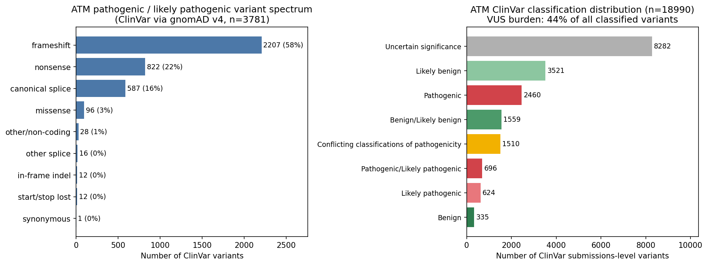
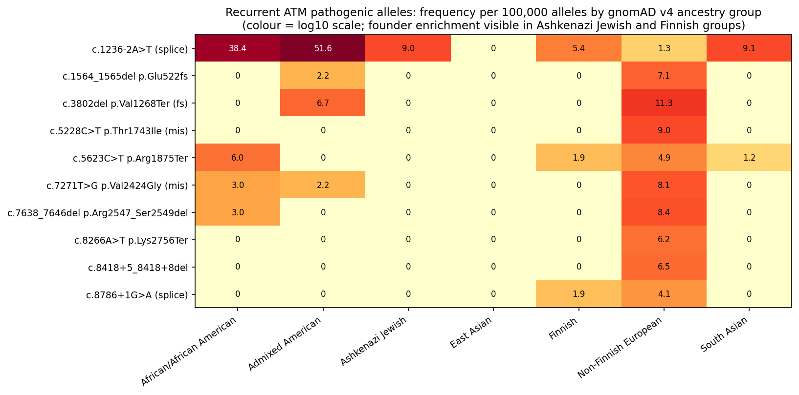
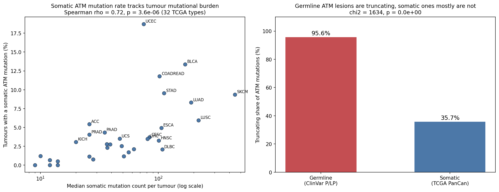
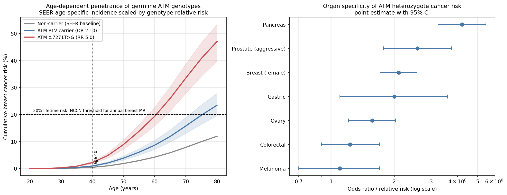

ATM-Related Cancer Predisposition
An autosomal dominant, moderate-penetrance, adult-onset tumour predisposition carried by people with one germline loss-of-function allele of ATM. ATM is the apical kinase of the DNA double-strand-break response: it rests as an inactive dimer and is switched on by MRN-gated intermolecular autophosphorylation at Ser1981, which dissociates the dimer and releases kinase activity. Because that activation step is intermolecular, the two classes of pathogenic allele are not equivalent. A truncating null leaves the wild-type copy making functional homodimers at roughly half capacity, whereas a dominant-negative missense or in-frame deletion allele makes a stable, catalytically dead subunit that enters mixed dimers and blocks activation of the wild-type partner. The clinical result is a moderately raised risk of female breast cancer (enriched for oestrogen-receptor-positive disease), exocrine pancreatic cancer, prostate cancer (with an excess of aggressive disease) and gastric cancer, presenting in adult life with no neurological, immunological or endocrine features. This entry covers the monoallelic state only; biallelic ATM loss causes ataxia-telangiectasia, a different disease curated separately.
Ask OpenScientist
Ask a research question about ATM-Related Cancer Predisposition. OpenScientist will conduct autonomous deep research using the Disorder Mechanisms Knowledge Base and PubMed literature (typically 10-30 minutes).
Do not include personal health information in your question. Questions and results are cached in your browser's local storage.
Inheritance
1Show evidence (3 references)
Discussions and Knowledge Gaps
1Pathophysiology
6Show evidence (1 reference)
Show evidence (2 references)
Show evidence (1 reference)
Show evidence (2 references)
Show evidence (1 reference)
Show evidence (2 references)
Pathograph
Phenotypes
4Breast 1
Show evidence (4 references)
Digestive 2
Show evidence (1 reference)
Show evidence (1 reference)
Genitourinary 1
Show evidence (1 reference)
Genetic Associations
1Show evidence (2 references)
Variants (1)
Show evidence (1 reference)
Medical Actions
5Show evidence (1 reference)
Show evidence (1 reference)
Show evidence (1 reference)
Show evidence (2 references)
Show evidence (2 references)
Diagnosis
1Show evidence (1 reference)
Differential Diagnoses
4Conditions with similar clinical presentations that must be differentiated from ATM-Related Cancer Predisposition:
Show evidence (1 reference)
Animal Models
1Show evidence (1 reference)
Source YAML
click to showname: ATM-Related Cancer Predisposition
category: Mendelian
creation_date: "2026-11-26T18:30:00Z"
synonyms:
- ATM-related cancer predisposition
- ATM heterozygous cancer predisposition
description: >-
An autosomal dominant, moderate-penetrance, adult-onset tumour predisposition carried
by people with one germline loss-of-function allele of ATM. ATM is the apical kinase
of the DNA double-strand-break response: it rests as an inactive dimer and is switched
on by MRN-gated intermolecular autophosphorylation at Ser1981, which dissociates the
dimer and releases kinase activity. Because that activation step is intermolecular,
the two classes of pathogenic allele are not equivalent. A truncating null leaves the
wild-type copy making functional homodimers at roughly half capacity, whereas a
dominant-negative missense or in-frame deletion allele makes a stable, catalytically
dead subunit that enters mixed dimers and blocks activation of the wild-type partner.
The clinical result is a moderately raised risk of female breast cancer (enriched for
oestrogen-receptor-positive disease), exocrine pancreatic cancer, prostate cancer
(with an excess of aggressive disease) and gastric cancer, presenting in adult life
with no neurological, immunological or endocrine features. This entry covers the
monoallelic state only; biallelic ATM loss causes ataxia-telangiectasia, a different
disease curated separately.
disease_term:
preferred_term: ATM-related cancer predisposition
term:
id: MONDO:0700270
label: ATM-related cancer predisposition
parents:
- Hereditary neoplastic syndrome
notes: >-
Entry name and scope. The name is the GeneReviews chapter title for this exact
concept, and that chapter is the phenotype baseline the entry is built on. The
scope boundary is the point of the entry: dismech already curates biallelic ATM loss
as Ataxia_Telangiectasia, bound to MONDO:0008840, and one functional allele is enough
for normal cerebellar development and normal immune function, so carriers have neither
ataxia nor immunodeficiency. GeneReviews, ClinGen and MONDO all treat the two as
separate entities, and MONDO:0700270 carries no OMIM anchor of its own.
Why no single penetrance figure is recorded. Risk is allele-specific, which is why the
entry separates the two allele classes as distinct pathophysiology nodes. Published
cumulative breast-cancer risk estimates also differ by ascertainment, with
family-based segregation analysis giving a lower figure and a wider interval than
case-control series, so a reader is given a per-study estimate and its design rather
than one number presented as the disease's penetrance. Both estimates sit on the
Breast carcinoma phenotype row, each quoted from its own study; the inheritance block
records only that penetrance is incomplete.
Two figures available in the deep-research report are deliberately not recorded,
because neither has a publication behind it. A heterozygote frequency of 1 in 252 is
the report's own arithmetic, summing gnomAD v4 allele frequencies across the ClinVar
pathogenic and likely-pathogenic ATM alleles; and a cumulative breast-cancer risk of
23.4 per cent to age 80 is the report's own model, combining SEER incidence with a
genotype relative risk under a constant-multiplier cumulative-hazard assumption.
Both are model output rather than observation, so there is no source to quote for
either and no carrier-frequency record is made. Relatedly, the report attributes an
oestrogen-receptor-positive odds ratio of 2.10, with an interval of 1.71 to 2.57, to
PMID:33471974; none of those three numbers appears in that paper's cached full text,
whose own reported value is an odds ratio of 1.82 for breast cancer overall, so 1.82
is what this entry records.
Three further tumour associations are reported but deliberately not curated as
phenotype rows. GeneReviews lists ovarian, colorectal and melanoma as modest
associations and states that larger studies are required to confirm them. Recording
them here rather than as phenotypes keeps the entry from asserting a risk its own
baseline source declines to assert.
inheritance:
- name: Autosomal dominant
inheritance_term:
preferred_term: Autosomal dominant inheritance
term:
id: HP:0000006
label: Autosomal dominant inheritance
penetrance: INCOMPLETE
description: >-
One pathogenic ATM allele is sufficient for the cancer predisposition. Most carriers
inherited the allele from a parent, who may never have had a cancer diagnosis given
the incomplete, age-dependent penetrance. The offspring of a carrier each have a 50
per cent chance of inheriting the variant, unless the reproductive partner also
carries a pathogenic ATM allele, in which case offspring are at risk of biallelic
loss and therefore of ataxia-telangiectasia, which is a different disease. No
`penetrance_percentage` is recorded: the published figures are site-specific and
design-dependent, so they are carried on the phenotype rows they describe rather
than collapsed into one number for a multi-site predisposition.
evidence:
- reference: PMID:42258614
reference_title: "ATM-Related Cancer Predisposition."
supports: SUPPORT
directness: DIRECT
evidence_source: HUMAN_CLINICAL
quote_role: REVIEW_SYNTHESIS
snippet: "the offspring of an individual with ATM-related cancer predisposition have a 50% chance of inheriting the pathogenic variant and having ATM-related cancer predisposition"
explanation: >-
The transmission risk a carrier is counselled on, from the chapter's Genetic
Counseling section.
- reference: PMID:35365198
reference_title: Population-based estimates of age-specific cumulative risk of breast cancer for pathogenic variants in ATM.
supports: SUPPORT
directness: DIRECT
evidence_source: HUMAN_CLINICAL
snippet: "The estimated cumulative risk of breast cancer to age 80 years for heterozygous ATM pathogenic variant carriers was estimated to be 13% (95% CI 4.6-30)."
explanation: >-
Supports the penetrance being incomplete rather than complete: on this estimate the
large majority of female carriers reach 80 without breast cancer.
- reference: PMID:42258614
reference_title: "ATM-Related Cancer Predisposition."
supports: SUPPORT
directness: DIRECT
evidence_source: HUMAN_CLINICAL
quote_role: REVIEW_SYNTHESIS
snippet: "The vast majority of individuals with a germline ATM pathogenic variant inherited the pathogenic variant from a parent."
explanation: >-
The GeneReviews chapter states the inheritance pattern and the usual mode of
transmission for this disease.
genetic:
- name: ATM
gene_term:
preferred_term: ATM
term:
id: hgnc:795
label: ATM
relationship_type: CAUSATIVE
gene_disease_validity:
- validity_classification: DEFINITIVE
classified_by: CLINGEN
external_id: CGGV:assertion_5acbaa2d-bdd3-40dd-b7e4-df0b0204468e-2024-11-22T180000.000Z
evidence:
- reference: CGGV:assertion_5acbaa2d-bdd3-40dd-b7e4-df0b0204468e-2024-11-22T180000.000Z
reference_title: "ATM / ATM-related cancer predisposition (Definitive)"
supports: SUPPORT
evidence_source: OTHER
snippet: "ATM | HGNC:795 | ATM-related cancer predisposition | MONDO:0700270 | AD | Definitive"
explanation: >-
The ClinGen Hereditary Cancer GCEP validity row for this gene-disease pair and
inheritance mode, curated separately from ataxia-telangiectasia.
evidence:
- reference: PMID:39636577
reference_title: "Management of individuals with heterozygous germline pathogenic variants in ATM: A clinical practice resource of the American College of Medical Genetics and Genomics (ACMG)."
supports: SUPPORT
directness: DIRECT
evidence_source: HUMAN_CLINICAL
quote_role: REVIEW_SYNTHESIS
snippet: "ATM germline pathogenic variants (GPVs) are associated with a moderately increased risk of female breast cancer, pancreatic cancer, and prostate cancer"
explanation: >-
The ACMG clinical practice resource states the core tumour triad and the moderate
magnitude of the risk in heterozygotes.
- reference: PMID:10814674
reference_title: "Cancer risk and the ATM gene: a continuing debate."
supports: SUPPORT
directness: DIRECT
evidence_source: HUMAN_CLINICAL
snippet: "null mutations leading to A-T and dominant negative missense mutations predisposing to cancer in the heterozygous state"
explanation: >-
States the two-allele-class model that this entry's pathophysiology is organised
around, and the reason a single penetrance figure is not recorded.
variants:
- name: ATM c.7271T>G (p.Val2424Gly)
clinical_significance: PATHOGENIC
description: >-
A missense allele reported to act in a dominant-negative manner and to segregate
with breast cancer in a family, rather than behaving as a simple null.
evidence:
- reference: PMID:17001622
reference_title: "Characterization of the breast cancer associated ATM 7271T>G (V2424G) mutation by gene expression profiling."
supports: SUPPORT
directness: DIRECT
evidence_source: HUMAN_CLINICAL
quote_role: BACKGROUND
snippet: "We previously reported one breast cancer family in which ATM 7271T>G (V2424G) segregated with disease, and apparently acted in a dominant negative manner"
explanation: >-
Human segregation evidence for a dominant-negative mechanism at a specific
allele.
notes: >-
The gene identifier is hgnc:795, read from HGNC and from the ClinGen validity row
quoted above. ClinGen curates ATM against this disease separately from ATM against
ataxia-telangiectasia, which is the split this entry follows.
pathophysiology:
- name: Heterozygous Germline ATM Loss of Function
description: >-
One inherited pathogenic ATM allele, in the great majority of cases a truncating
variant. The carrier retains one wild-type copy, which is what distinguishes this
disease from biallelic ATM loss.
biological_scale: MOLECULAR
genetic_context:
variant_origin: GERMLINE
functional_impact_category: LOSS_OF_FUNCTION
genes:
- preferred_term: ATM
term:
id: hgnc:795
label: ATM
molecular_functions:
- preferred_term: protein serine/threonine kinase activity
term:
id: GO:0004674
label: protein serine/threonine kinase activity
modifier: DECREASED
downstream:
- target: Reduced ATM Dimer Activation Capacity
causal_link_type: DIRECT
description: >-
A null allele halves the pool of subunits available to form activatable dimers.
- target: Dominant-Negative Dimer Poisoning
causal_link_type: DIRECT
description: >-
A missense or in-frame deletion allele instead contributes a stable, catalytically
dead subunit to the dimer pool.
evidence:
- reference: PMID:42258614
reference_title: "ATM-Related Cancer Predisposition."
supports: SUPPORT
directness: DIRECT
evidence_source: HUMAN_CLINICAL
quote_role: REVIEW_SYNTHESIS
snippet: "The diagnosis of ATM-related cancer predisposition is established in a proband with a heterozygous germline pathogenic variant in ATM identified by molecular genetic testing."
explanation: >-
Establishes that the monoallelic germline variant is the defining lesion of this
disease.
- name: ATM Dimer Autophosphorylation Switch
description: >-
Inactive ATM is held as a dimer with the kinase domain bound to a region around
Ser1981. Damage triggers intermolecular autophosphorylation of Ser1981, which
dissociates the dimer and releases kinase activity. Because the phosphorylation is
intermolecular, one subunit's activation depends on its partner, and that is the
structural reason the two allele classes below behave differently.
biological_scale: MOLECULAR
biological_processes:
- preferred_term: protein autophosphorylation
term:
id: GO:0046777
label: protein autophosphorylation
evidence:
- reference: PMID:12556884
reference_title: "DNA damage activates ATM through intermolecular autophosphorylation and dimer dissociation."
supports: SUPPORT
directness: DIRECT
evidence_source: IN_VITRO
snippet: "Cellular irradiation induces rapid intermolecular autophosphorylation of serine 1981 that causes dimer dissociation and initiates cellular ATM kinase activity"
explanation: >-
Establishes the activation mechanism, including that the autophosphorylation is
intermolecular, which the dominant-negative node depends on.
- reference: PMID:25240135
reference_title: "Dimer monomer transition and dimer re-formation play important role for ATM cellular function during DNA repair."
supports: SUPPORT
directness: DIRECT
evidence_source: IN_VITRO
snippet: "ATM cannot phosphorylate the substrates when it could not undergo dimer monomer transition"
explanation: >-
Shows the dimer-to-monomer transition is required for catalysis, so blocking it
blocks ATM signalling.
- name: Reduced ATM Dimer Activation Capacity
description: >-
The null-allele route. With one allele producing no protein, the carrier forms
functional wild-type homodimers at roughly half the normal abundance, giving a
quantitative reduction in ATM signalling capacity rather than its abolition.
biological_scale: MOLECULAR
molecular_functions:
- preferred_term: protein serine/threonine kinase activity
term:
id: GO:0004674
label: protein serine/threonine kinase activity
modifier: DECREASED
downstream:
- target: Attenuated DNA Damage Checkpoint Signalling
causal_link_type: DIRECT
description: >-
Less activatable ATM gives a weaker damage-response signal.
evidence:
- reference: PMID:12195425
reference_title: "Mice heterozygous for mutation in Atm, the gene involved in ataxia-telangiectasia, have heightened susceptibility to cancer."
supports: SUPPORT
directness: INDIRECT
evidence_source: MODEL_ORGANISM
snippet: "show an increased susceptibility to developing tumors. In contrast, no tumors are observed in Atm knockout"
explanation: >-
The contrast in this sentence is the evidence for the two-class model: the
knockout heterozygote, which models the null-allele route, develops no tumours
where the in-frame deletion heterozygote does. Cited here as indirect support for
the null route being the weaker of the two.
- name: Dominant-Negative Dimer Poisoning
description: >-
The dominant-negative route. Selected missense and in-frame deletion alleles make a
stable but catalytically dead subunit that enters mixed dimers with the wild-type
subunit and blocks its activation. Because Ser1981 autophosphorylation is
intermolecular, such a carrier loses considerably more than half of ATM activity,
which is why risk is allele-specific rather than uniform across pathogenic carriers.
biological_scale: MOLECULAR
molecular_functions:
- preferred_term: protein serine/threonine kinase activity
term:
id: GO:0004674
label: protein serine/threonine kinase activity
modifier: DECREASED
downstream:
- target: Attenuated DNA Damage Checkpoint Signalling
causal_link_type: DIRECT
description: >-
A poisoned dimer pool gives a disproportionately weak damage-response signal.
evidence:
- reference: PMID:12195425
reference_title: "Mice heterozygous for mutation in Atm, the gene involved in ataxia-telangiectasia, have heightened susceptibility to cancer."
supports: SUPPORT
directness: DIRECT
evidence_source: MODEL_ORGANISM
snippet: "Expression of ATM cDNA containing the 7636del9 mutation had a dominant-negative effect in control cells, inhibiting radiation-induced ATM kinase activity in vivo and in vitro"
explanation: >-
Direct functional demonstration that the in-frame deletion allele suppresses
wild-type ATM kinase activity rather than merely failing to contribute.
- reference: PMID:17001622
reference_title: "Characterization of the breast cancer associated ATM 7271T>G (V2424G) mutation by gene expression profiling."
supports: SUPPORT
directness: DIRECT
evidence_source: HUMAN_CLINICAL
quote_role: BACKGROUND
snippet: "We previously reported one breast cancer family in which ATM 7271T>G (V2424G) segregated with disease, and apparently acted in a dominant negative manner"
explanation: >-
Human evidence that a dominant-negative allele segregates with breast cancer in a
family.
- name: Attenuated DNA Damage Checkpoint Signalling
description: >-
Reduced ATM output weakens the damage-response signal that arrests the cell cycle
and licenses repair after a double-strand break. ATM is a damage sensor rather than
a repair effector, so the resulting defect is a checkpoint defect and not a collapse
of homologous recombination — a distinction that carries directly into how these
tumours respond to PARP inhibition.
biological_scale: CELLULAR
biological_processes:
- preferred_term: DNA damage checkpoint signaling
term:
id: GO:0000077
label: DNA damage checkpoint signaling
modifier: DECREASED
- preferred_term: DNA damage response
term:
id: GO:0006974
label: DNA damage response
modifier: DECREASED
downstream:
- target: Genomic Instability in Glandular Epithelium
causal_link_type: INDIRECT_KNOWN_INTERMEDIATES
description: >-
Damage that escapes checkpoint control is carried into division, so mutations and
structural rearrangements accumulate across successive cell cycles.
evidence:
- reference: PMID:40849250
reference_title: "Impact of HRR Gene Subclass on Clinical Outcomes of PARP Inhibitors in Metastatic Castration-Resistant Prostate Cancer."
supports: SUPPORT
directness: INDIRECT
evidence_source: HUMAN_CLINICAL
snippet: "Patients with effector mutations demonstrated a statistically significant improvement in PFS compared to those with sensor mutations"
explanation: >-
Supports the sensor-versus-effector distinction this node rests on, through its
therapeutic consequence: ATM is a sensor gene, and sensor-gene tumours behave
differently from homologous-recombination effector tumours.
- name: Genomic Instability in Glandular Epithelium
description: >-
Accumulated unrepaired damage in the epithelia where carrier tumours arise — breast,
exocrine pancreas, prostate and stomach. The tissue restriction is not explained by
the mechanism, which operates in every cell of the carrier, and is recorded as an
open question in this entry's discussions.
biological_scale: TISSUE
cell_types:
- preferred_term: mammary gland epithelial cell
term:
id: CL:0002327
label: mammary gland epithelial cell
- preferred_term: pancreatic ductal cell
term:
id: CL:0002079
label: pancreatic ductal cell
- preferred_term: epithelial cell of prostate
term:
id: CL:0002231
label: epithelial cell of prostate
locations:
- preferred_term: breast
term:
id: UBERON:0000310
label: breast
- preferred_term: pancreas
term:
id: UBERON:0001264
label: pancreas
- preferred_term: prostate gland
term:
id: UBERON:0002367
label: prostate gland
- preferred_term: stomach
term:
id: UBERON:0000945
label: stomach
downstream:
- target: Breast carcinoma
causal_link_type: INDIRECT_KNOWN_INTERMEDIATES
description: >-
The dominant manifestation, enriched for oestrogen-receptor-positive disease.
- target: Pancreatic carcinoma
causal_link_type: INDIRECT_KNOWN_INTERMEDIATES
description: >-
Exocrine pancreatic cancer, one of the core triad.
- target: Prostate cancer
causal_link_type: INDIRECT_KNOWN_INTERMEDIATES
description: >-
With an excess of aggressive rather than indolent disease.
- target: Gastric adenocarcinoma
causal_link_type: INDIRECT_KNOWN_INTERMEDIATES
description: >-
Named in the GeneReviews clinical characteristics alongside the other three.
evidence:
- reference: PMID:39636577
reference_title: "Management of individuals with heterozygous germline pathogenic variants in ATM: A clinical practice resource of the American College of Medical Genetics and Genomics (ACMG)."
supports: SUPPORT
directness: DIRECT
evidence_source: HUMAN_CLINICAL
quote_role: REVIEW_SYNTHESIS
snippet: "ATM germline pathogenic variants (GPVs) are associated with a moderately increased risk of female breast cancer, pancreatic cancer, and prostate cancer"
explanation: >-
Identifies the organ sites at which the genomic instability of this disease
actually produces tumours. It does not itself evidence the instability; the item
below does that.
- reference: PMID:15101044
reference_title: Functional consequences of ATM sequence variants for chromosomal radiosensitivity.
supports: SUPPORT
directness: INDIRECT
evidence_source: IN_VITRO
snippet: "The BC, A-T het, and A-T cell line groups showed significantly higher mean levels of MN formation after exposure to ionizing radiation (IR) than did the group containing normal cell lines, with similar levels in the BC and A-T het groups."
explanation: >-
A direct measurement of chromosomal damage in cells from ATM heterozygotes:
micronucleus formation is raised in heterozygote and breast-cancer-patient
lymphoblastoid lines against normal lines. Graded INDIRECT for two reasons that
matter when reading it as support for this node. The damage was induced by
irradiation rather than observed accruing spontaneously, and it was measured in
lymphoblastoid lines rather than in the glandular epithelia where carrier tumours
arise. It is nonetheless evidence that one functional ATM allele is not sufficient
to keep chromosomal damage at the level a normal genotype maintains, which is the
claim this node makes.
phenotypes:
- category: Neoplastic
name: Breast carcinoma
description: >-
Female breast cancer at moderately increased risk, enriched for
oestrogen-receptor-positive disease rather than the triple-negative pattern seen
with some other homologous-recombination genes. Two published estimates of that risk
are recorded below and they are not interchangeable, because their designs answer
different questions. A population-based case-control study gives an odds ratio of
1.82, with a confidence interval from 1.46 to 2.27, for breast cancer overall, and
reports the association as restricted to oestrogen-receptor-positive disease.
Family-based segregation analysis in the Australian Breast Cancer Family Registry
gives a cumulative risk to age 80 of 13 per cent, with a confidence interval from 4.6
to 30 that reflects both the small number of informative families and heterogeneity
among the pathogenic alleles pooled into it. The case-control odds ratio says how
much a carrier's risk is multiplied; the segregation analysis says what proportion of
carriers develop the disease. Neither is the disease's penetrance, since this is a
multi-site predisposition and both figures are specific to female breast cancer.
phenotype_term:
preferred_term: Breast carcinoma
term:
id: HP:0003002
label: Breast carcinoma
evidence:
- reference: PMID:33471974
reference_title: "A Population-Based Study of Genes Previously Implicated in Breast Cancer."
supports: SUPPORT
directness: DIRECT
evidence_source: HUMAN_CLINICAL
snippet: "whereas pathogenic variants in ATM, CDH1, and CHEK2 were associated with an increased risk of estrogen receptor-positive breast cancer"
explanation: >-
A population-based case-control study establishing both the association and its
restriction to oestrogen-receptor-positive disease.
- reference: PMID:33471974
reference_title: "A Population-Based Study of Genes Previously Implicated in Breast Cancer."
supports: SUPPORT
directness: DIRECT
evidence_source: HUMAN_CLINICAL
snippet: "Pathogenic variants in ATM and NF1 were associated with an increased risk of breast cancer, with odds ratios of 1.82 (95% CI, 1.46 to 2.27) and 1.93 (95% CI, 0.91 to 4.31), respectively."
explanation: >-
The case-control risk estimate itself, quoted so the magnitude and its interval are
attributable rather than described. This is the odds ratio for breast cancer
overall; the same study reports the association as confined to
oestrogen-receptor-positive disease.
- reference: PMID:35365198
reference_title: Population-based estimates of age-specific cumulative risk of breast cancer for pathogenic variants in ATM.
supports: SUPPORT
directness: DIRECT
evidence_source: HUMAN_CLINICAL
snippet: "The estimated cumulative risk of breast cancer to age 80 years for heterozygous ATM pathogenic variant carriers was estimated to be 13% (95% CI 4.6-30)."
explanation: >-
The family-based segregation estimate, recorded beside the case-control odds ratio
because the two designs give different quantities and the wide interval here is
part of the finding.
- reference: PMID:42258614
reference_title: "ATM-Related Cancer Predisposition."
supports: SUPPORT
directness: DIRECT
evidence_source: HUMAN_CLINICAL
quote_role: REVIEW_SYNTHESIS
snippet: "ATM-related cancer predisposition is characterized by a moderately increased risk of female breast cancer, exocrine pancreatic cancer, prostate cancer, and gastric cancer."
explanation: >-
The GeneReviews clinical characteristics statement, which is this entry's
phenotype baseline.
- category: Neoplastic
name: Pancreatic carcinoma
description: >-
Exocrine pancreatic cancer, one of the three tumours the ACMG resource names as
carrying moderately increased risk in heterozygotes.
phenotype_term:
preferred_term: Neoplasm of the pancreas
term:
id: HP:0002894
label: Neoplasm of the pancreas
coarse_binding_basis: SOURCE_UNSPECIFIED
evidence:
- reference: PMID:42258614
reference_title: "ATM-Related Cancer Predisposition."
supports: SUPPORT
directness: DIRECT
evidence_source: HUMAN_CLINICAL
quote_role: REVIEW_SYNTHESIS
snippet: "ATM-related cancer predisposition is characterized by a moderately increased risk of female breast cancer, exocrine pancreatic cancer, prostate cancer, and gastric cancer."
explanation: >-
Names exocrine pancreatic cancer among the established tumour risks.
notes: >-
Bound to the coarse HP:0002894 because the sources say exocrine pancreatic cancer
without consistently specifying a histology, so a ductal-adenocarcinoma term would
assert more than they do.
- category: Neoplastic
name: Prostate cancer
description: >-
Prostate cancer at increased risk, with the association extending to tumour
aggressiveness rather than incidence alone.
phenotype_term:
preferred_term: Prostate cancer
term:
id: HP:0012125
label: Prostate cancer
evidence:
- reference: PMID:38458890
reference_title: "Identification of Genes with Rare Loss of Function Variants Associated with Aggressive Prostate Cancer and Survival."
supports: SUPPORT
directness: DIRECT
evidence_source: HUMAN_CLINICAL
snippet: "We observed associations between PrCa aggressiveness and pLOF mutations in ATM, BRCA2, MSH2, and NBN"
explanation: >-
Establishes that the prostate association involves aggressiveness, which is what
makes it matter clinically beyond incidence.
- category: Neoplastic
name: Gastric adenocarcinoma
description: >-
Gastric cancer, named in the GeneReviews clinical characteristics for this disease
alongside breast, pancreatic and prostate cancer.
phenotype_term:
preferred_term: Gastric adenocarcinoma
term:
id: HP:0033770
label: Gastric adenocarcinoma
evidence:
- reference: PMID:42258614
reference_title: "ATM-Related Cancer Predisposition."
supports: SUPPORT
directness: DIRECT
evidence_source: HUMAN_CLINICAL
quote_role: REVIEW_SYNTHESIS
snippet: "ATM-related cancer predisposition is characterized by a moderately increased risk of female breast cancer, exocrine pancreatic cancer, prostate cancer, and gastric cancer."
explanation: >-
The baseline source names gastric cancer as one of the four established risks.
diagnosis:
- name: Germline ATM sequencing establishing heterozygosity
description: >-
The diagnosis rests on finding one heterozygous germline pathogenic ATM variant.
Zygosity is the branch point: a second pathogenic allele makes the diagnosis
ataxia-telangiectasia instead, a different disease with a different surveillance and
management pathway.
evidence:
- reference: PMID:42258614
reference_title: "ATM-Related Cancer Predisposition."
supports: SUPPORT
directness: DIRECT
evidence_source: HUMAN_CLINICAL
quote_role: REVIEW_SYNTHESIS
snippet: "The diagnosis of ATM-related cancer predisposition is established in a proband with a heterozygous germline pathogenic variant in ATM identified by molecular genetic testing."
explanation: >-
States the diagnostic criterion, including the heterozygous requirement that
separates this disease from ataxia-telangiectasia.
treatments:
- name: Breast surveillance from early adulthood
description: >-
Annual mammography from age 40 with breast MRI from age 30 to 35, the exact starting
ages varying by country. Risk-reducing surgery and endocrine risk reduction are
considered against personalised risk rather than offered to every carrier.
therapeutic_modality: BEHAVIORAL
treatment_term:
preferred_term: cancer screening
term:
id: NCIT:C15406
label: Cancer Screening
target_phenotypes:
- preferred_term: Breast carcinoma
term:
id: HP:0003002
label: Breast carcinoma
evidence:
- reference: PMID:42258614
reference_title: "ATM-Related Cancer Predisposition."
supports: SUPPORT
directness: DIRECT
evidence_source: HUMAN_CLINICAL
quote_role: REVIEW_SYNTHESIS
snippet: "annual mammogram beginning at age 40 years; annual breast MRI beginning at age 30-35 years (recommendations regarding age to start breast surveillance and use of breast MRI vary by country)"
explanation: >-
The surveillance schedule from this disease's own GeneReviews chapter, including
that the starting age is not internationally settled.
- name: Risk-reducing mastectomy or salpingo-oophorectomy
description: >-
Bilateral risk-reducing mastectomy, bilateral salpingo-oophorectomy, or both may be
considered, but neither is routinely recommended on the basis of carrier status
alone. The decision is taken against a personalised risk assessment that includes
family history, by shared decision-making. This is the practical consequence of the
moderate risk tier: the same surgery that is standard advice in a high-penetrance
syndrome is optional here.
therapeutic_modality: SURGERY
treatment_term:
preferred_term: bilateral risk-reducing mastectomy or salpingo-oophorectomy
term:
id: NCIT:C15329
label: Surgical Procedure
target_phenotypes:
- preferred_term: Breast carcinoma
term:
id: HP:0003002
label: Breast carcinoma
evidence:
- reference: PMID:42258614
reference_title: "ATM-Related Cancer Predisposition."
supports: SUPPORT
directness: DIRECT
evidence_source: HUMAN_CLINICAL
quote_role: REVIEW_SYNTHESIS
snippet: "Bilateral risk-reducing mastectomy and/or bilateral salpingo-oophorectomy can be considered in the context of a personalized risk assessment including family history using a shared decision-making approach with the affected individual."
explanation: >-
The chapter's Prevention of Manifestations statement, including the conditionality
that keeps this from being a routine recommendation.
- name: Endocrine risk-reducing therapy
description: >-
Tamoxifen, raloxifene or anastrozole may be considered for breast-cancer risk
reduction, again against family history and a personalised risk estimate rather than
offered to every carrier. The oestrogen-receptor-positive enrichment of
ATM-associated breast cancer is the reason an endocrine agent is a plausible
preventive here at all.
therapeutic_modality: SMALL_MOLECULE
treatment_term:
preferred_term: endocrine risk-reducing therapy
term:
id: NCIT:C15986
label: Pharmacotherapy
therapeutic_agent:
- preferred_term: tamoxifen
term:
id: CHEBI:41774
label: tamoxifen
- preferred_term: raloxifene
term:
id: CHEBI:8772
label: raloxifene
- preferred_term: anastrozole
term:
id: CHEBI:2704
label: anastrozole
target_phenotypes:
- preferred_term: Breast carcinoma
term:
id: HP:0003002
label: Breast carcinoma
evidence:
- reference: PMID:42258614
reference_title: "ATM-Related Cancer Predisposition."
supports: SUPPORT
directness: DIRECT
evidence_source: HUMAN_CLINICAL
quote_role: REVIEW_SYNTHESIS
snippet: "Endocrine risk-reducing therapies (e.g., tamoxifen, raloxifene, or anastrozole) can be considered in the context of family history and personalized risk estimates."
explanation: >-
Names the three agents and the same conditionality as the surgical option.
- name: Radiotherapy when otherwise indicated
description: >-
Radiotherapy is not withheld from a carrier. This is the management statement with
the most history behind it, because biallelic ATM loss causes clinical
radiosensitivity and that was long assumed to extend to heterozygotes. A
population-based contralateral-breast-cancer study found that radiotherapy did not
modify the contralateral risk carried by known pathogenic variants, and concluded
that altering radiotherapy plans on that basis is unwarranted. The same study found
an elevated radiotherapy-associated contralateral risk confined to carriers of rare
ATM missense variants of uncertain significance, which is a different group from the
pathogenic carriers this entry is about and is a reason the question is not closed
rather than a reason to withhold treatment. Note that this coexists with the raised
micronucleus formation after irradiation recorded on the Genomic Instability in
Glandular Epithelium node, and the two are not in conflict: a measurable difference
in a cellular damage assay did not translate into a measurable difference in
contralateral breast cancer after radiotherapy in a population-based cohort. The
cellular result is why the question was asked; the cohort result is what answers it
for management.
therapeutic_modality: RADIOTHERAPY
treatment_term:
preferred_term: radiation therapy
term:
id: NCIT:C15313
label: Radiation Therapy
target_phenotypes:
- preferred_term: Breast carcinoma
term:
id: HP:0003002
label: Breast carcinoma
evidence:
- reference: PMID:42258614
reference_title: "ATM-Related Cancer Predisposition."
supports: SUPPORT
directness: DIRECT
evidence_source: HUMAN_CLINICAL
quote_role: REVIEW_SYNTHESIS
snippet: "When indicated, radiotherapy can be used in individuals with ATM-related cancer predisposition."
explanation: >-
The chapter's own management statement, which is what a treating clinician is
acting on.
- reference: PMID:32119081
reference_title: "Radiation Treatment, ATM, BRCA1/2, and CHEK2*1100delC Pathogenic Variants and Risk of Contralateral Breast Cancer."
supports: SUPPORT
directness: DIRECT
evidence_source: HUMAN_CLINICAL
snippet: "RT did not modify the association between known pathogenic variants and CBC risk"
explanation: >-
The population-based result behind the management statement, and the reason it is a
null rather than an absence of data. The same passage reports an elevated
radiotherapy-associated contralateral risk for carriers of rare ATM missense
variants of uncertain significance, which is recorded in this row's description;
that sentence is not quoted because the cached full text has lost the spaces around
the gene symbol in it.
- name: PARP inhibition
description: >-
Olaparib is approved in molecularly selected metastatic castration-resistant
prostate cancer, and ATM was one of the genes in the registrational cohort. The
benefit in ATM-altered disease is weaker than in BRCA-altered disease, because ATM
loss gives a checkpoint defect rather than the homologous-recombination collapse
that makes PARP inhibition synthetically lethal.
therapeutic_modality: SMALL_MOLECULE
treatment_term:
preferred_term: Pharmacotherapy
term:
id: NCIT:C15986
label: Pharmacotherapy
therapeutic_agent:
- preferred_term: olaparib
term:
id: CHEBI:83766
label: olaparib
target_mechanisms:
- target: Attenuated DNA Damage Checkpoint Signalling
description: >-
PARP inhibition is used against the DNA-repair deficiency this node describes,
though the entry records that ATM is a weaker synthetic-lethal partner than the
homologous-recombination effector genes.
evidence:
- reference: PMID:32343890
reference_title: "Olaparib for Metastatic Castration-Resistant Prostate Cancer."
supports: SUPPORT
directness: INDIRECT
evidence_source: HUMAN_CLINICAL
snippet: "median, 7.4 months vs. 3.6 months; hazard ratio for progression or death, 0.34"
explanation: >-
The registrational progression-free survival result for the cohort that included
ATM. Marked indirect because that cohort pooled BRCA1, BRCA2 and ATM and was
dominated by BRCA2, so it does not isolate the ATM effect.
- reference: PMID:40849250
reference_title: "Impact of HRR Gene Subclass on Clinical Outcomes of PARP Inhibitors in Metastatic Castration-Resistant Prostate Cancer."
supports: SUPPORT
directness: DIRECT
evidence_source: HUMAN_CLINICAL
snippet: "Patients with effector mutations demonstrated a statistically significant improvement in PFS compared to those with sensor mutations"
explanation: >-
Quantifies the gap between sensor genes such as ATM and homologous-recombination
effector genes, which is why this treatment row is qualified rather than presented
as equivalent to its use in BRCA-altered disease.
differential_diagnoses:
- name: Ataxia-telangiectasia
description: >-
The biallelic disease, and the differential that matters most here because it is the
same gene. It presents in early childhood with progressive cerebellar ataxia,
oculocutaneous telangiectasia, immunodeficiency and a far higher cancer risk
dominated by lymphoid malignancy. Carriers of a single allele have none of the
neurological, immune or endocrine features. The practical connection is reproductive:
two carriers can have a child with ataxia-telangiectasia.
evidence:
- reference: PMID:42258614
reference_title: "ATM-Related Cancer Predisposition."
supports: SUPPORT
directness: DIRECT
evidence_source: HUMAN_CLINICAL
quote_role: REVIEW_SYNTHESIS
snippet: "offspring are at risk of inheriting biallelic ATM pathogenic variants and having ataxia-telangiectasia"
explanation: >-
States the relationship between the two diseases in the terms that matter to a
carrier, and confirms that they are separate entities.
- name: CHEK2-related cancer predisposition
description: >-
The closest phenocopy: another moderate-penetrance, autosomal dominant predisposition
to oestrogen-receptor-positive breast cancer, grouped with ATM in the same
population-based analysis. Distinguished by gene testing rather than by phenotype.
- name: Hereditary breast and ovarian cancer syndrome
description: >-
BRCA1 and BRCA2 carry higher penetrance and a different tumour-subtype profile —
oestrogen-receptor-negative and triple-negative disease for BRCA1 — and respond
considerably better to PARP inhibition, being homologous-recombination effectors
rather than damage sensors.
- name: PALB2-related cancer predisposition
description: >-
Another breast and pancreatic predisposition gene, but a homologous-recombination
effector bridging BRCA1 to BRCA2, so it behaves like the BRCA genes on therapy
response rather than like ATM.
animal_models:
- name: Atm-Delta SRI knock-in heterozygous mouse
species: Mouse
genotype: Atm in-frame deletion corresponding to human 7636del9, heterozygous
publication: PMID:12195425
modeled_mechanisms:
- target: Dominant-Negative Dimer Poisoning
relationship: RECAPITULATES
fidelity: HIGH
model_scale: ORGANISM
description: >-
The decisive allele-class experiment. A heterozygous in-frame deletion
corresponding to the human dominant-negative allele gives increased tumour
susceptibility, while a heterozygous knockout of the same gene gives none. That
contrast is what establishes the two allele classes as mechanistically different
rather than as two degrees of the same loss.
evidence:
- reference: PMID:12195425
reference_title: "Mice heterozygous for mutation in Atm, the gene involved in ataxia-telangiectasia, have heightened susceptibility to cancer."
supports: SUPPORT
directness: DIRECT
evidence_source: MODEL_ORGANISM
snippet: "show an increased susceptibility to developing tumors. In contrast, no tumors are observed in Atm knockout"
explanation: >-
States both arms of the contrast in one sentence: tumours in the in-frame
deletion heterozygote, none in the knockout heterozygote.
notes: >-
No MGI identifier is bound for the mouse Atm gene. The Alliance of Genome Resources
API was unreachable from the curation environment, and this repository's term
validator does not check MGI labels, so an identifier written from memory would pass
every gate unverified. The model is identified by species, genotype and publication.
discussions:
- discussion_id: atm_heterozygote_tissue_restriction
kind: KNOWLEDGE_GAP
prompt: >-
Why is the tumour risk in ATM heterozygotes restricted to breast, exocrine pancreas,
prostate and stomach, when the attenuated damage response operates in every cell of
the carrier?
rationale: >-
The mechanism this entry curates is constitutional and tissue-agnostic: one allele
is lost in every nucleated cell, and nothing in the chain from allele to checkpoint
attenuation has a cell-type-specific component. Yet the clinical risk is sharply
organ-restricted, and the entry's own pathophysiology offers nothing that predicts
which epithelia are affected. Any explanation has to come from outside the ATM chain
— proliferative rate, hormonal drive, baseline replication stress, or the local
repair pathways that compensate — and none has been shown to be the operative
factor. The gap matters practically, because surveillance is organ-specific and
therefore rests on the epidemiology rather than on the mechanism.
attaches_to:
- pathophysiology#Genomic Instability in Glandular Epithelium
- pathophysiology#Attenuated DNA Damage Checkpoint Signalling
references:
- reference: PMID:42258614
title: "ATM-Related Cancer Predisposition."
tags:
- GeneReviews
findings: []
References & Deep Research
References
1Deep Research
1Deep research results are used as seeds for research; they do not undergo the same validation as the main records and may contain errors. How we use deep research.
Evaluations and curation notes (2)
Record notes
Entry name and scope. The name is the GeneReviews chapter title for this exact concept, and that chapter is the phenotype baseline the entry is built on. The scope boundary is the point of the entry: dismech already curates biallelic ATM loss as Ataxia_Telangiectasia, bound to MONDO:0008840, and one functional allele is enough for normal cerebellar development and normal immune function, so carriers have neither ataxia nor immunodeficiency. GeneReviews, ClinGen and MONDO all treat the two as separate entities, and MONDO:0700270 carries no OMIM anchor of its own. Why no single penetrance figure is recorded. Risk is allele-specific, which is why the entry separates the two allele classes as distinct pathophysiology nodes. Published cumulative breast-cancer risk estimates also differ by ascertainment, with family-based segregation analysis giving a lower figure and a wider interval than case-control series, so a reader is given a per-study estimate and its design rather than one number presented as the disease's penetrance. Both estimates sit on the Breast carcinoma phenotype row, each quoted from its own study; the inheritance block records only that penetrance is incomplete. Two figures available in the deep-research report are deliberately not recorded, because neither has a publication behind it. A heterozygote frequency of 1 in 252 is the report's own arithmetic, summing gnomAD v4 allele frequencies across the ClinVar pathogenic and likely-pathogenic ATM alleles; and a cumulative breast-cancer risk of 23.4 per cent to age 80 is the report's own model, combining SEER incidence with a genotype relative risk under a constant-multiplier cumulative-hazard assumption. Both are model output rather than observation, so there is no source to quote for either and no carrier-frequency record is made. Relatedly, the report attributes an oestrogen-receptor-positive odds ratio of 2.10, with an interval of 1.71 to 2.57, to PMID:33471974; none of those three numbers appears in that paper's cached full text, whose own reported value is an odds ratio of 1.82 for breast cancer overall, so 1.82 is what this entry records. Three further tumour associations are reported but deliberately not curated as phenotype rows. GeneReviews lists ovarian, colorectal and melanoma as modest associations and states that larger studies are required to confirm them. Recording them here rather than as phenotypes keeps the entry from asserting a risk its own baseline source declines to assert.
Review round 1: ATM-Related Cancer Predisposition · 2026-11-26T23:50:57Z · View source
Answered the ai4c-reviewer CHANGES_REQUESTED review on PR 19074 in one push. All seven items, blocking and optional, are addressed here. Item 1, GeneReviews chapter cited but not tagged. Ran just tag-references, which added the top-level references block tagging PMID:42258614 as GeneReviews; check-genereviews now reports TAGGED rather than CITED_UNTAGGED. Removed the clause in the entry-level notes that described the check's own output, which was both false after tagging and a statement about how the curation was done rather than about the disease. Item 2, notes promised per-study penetrance estimates the entry did not carry. Two are now recorded on the Breast carcinoma phenotype row, each quoted from its own study, with the designs distinguished in the row description: an odds ratio of 1.82 (95% CI 1.46 to 2.27) from the population-based case-control study already cited, and a cumulative risk to age 80 of 13% (95% CI 4.6-30) from family-based segregation analysis, newly fetched as PMID:35365198. The inheritance block now carries penetrance INCOMPLETE with the segregation estimate supporting it, and penetrance_percentage is deliberately left absent because the published figures are site- and design-specific and this is a multi-site predisposition. Two of the three figures the review offered are not recorded, and the reason is recorded in notes. A heterozygote frequency of 1 in 252 is the deep-research report's own arithmetic over gnomAD v4 allele frequencies, and a cumulative breast risk of 23.4 per cent to age 80 is the report's own SEER-plus-relative-risk model; both are model output with no publication behind them, so neither can carry an evidence item and no carrier-frequency record was made. Separately, the review attributed an oestrogen-receptor-positive odds ratio of 2.10 (95 per cent CI 1.71 to 2.57) to PMID:33471974. None of those three numbers appears anywhere in that paper's cached full text, whose own reported value is 1.82 for breast cancer overall; 1.82 is therefore what the entry records. Item 3, Genetic Counseling. The 50 per cent transmission risk is added to the inheritance block with the chapter's own sentence quoted, together with the consequence the chapter draws for a carrier couple, that offspring are then at risk of biallelic loss and so of a different disease. Item 4, Management. Three treatment rows added, each with the chapter's quoted sentence: risk-reducing mastectomy or salpingo-oophorectomy (SURGERY, NCIT:C15329), endocrine risk-reducing therapy (SMALL_MOLECULE, NCIT:C15986 with CHEBI:41774 tamoxifen, CHEBI:8772 raloxifene and CHEBI:2704 anastrozole as therapeutic_agent), and radiotherapy when otherwise indicated (RADIOTHERAPY, NCIT:C15313). The radiotherapy row carries the WECARE result the review named, PMID:32119081, quoted for the finding that actually supports the management statement: radiotherapy did not modify the contralateral risk carried by known pathogenic variants. The same study's elevated radiotherapy-associated risk is confined to carriers of rare ATM missense variants of uncertain significance, a different group from the pathogenic carriers this entry covers; that is recorded in the row description rather than quoted, because the cached full text has lost the spaces around the gene symbol in that sentence. Item 5, quote_role on PMID:17001622. Added quote_role BACKGROUND to both uses. The snippet opens "We previously reported", so the sentence restates the authors' earlier segregation finding while the paper's own work is expression profiling. Item 6, evidence for the Genomic Instability in Glandular Epithelium node. The review was right that the ACMG snippet supports the organ sites rather than the instability. Added PMID:15101044, which measured micronucleus formation after irradiation in lymphoblastoid lines from ATM heterozygotes and from breast cancer patients carrying ATM missense variants, both significantly above normal lines. Graded INDIRECT and IN_VITRO: the damage was induced rather than observed accruing, and the cells are lymphoblastoid rather than the glandular epithelia where carrier tumours arise. The existing ACMG explanation now says explicitly that it evidences the sites and not the instability. That addition creates an apparent tension with the radiotherapy row, and the two rows now cross-reference each other rather than leaving a reader to reconcile them: raised micronucleus formation in a cellular assay coexists with no measurable excess of contralateral breast cancer after radiotherapy in a population-based cohort, and the entry says which question each result answers. Item 7, stomach anatomy. Added UBERON:0000945 to the node's locations, which previously listed breast, pancreas and prostate while the description and a downstream edge both named stomach. Validation after the round: validate-disorders clean, 33 snippets and 34 titles verified with 0 issues; every reference_title re-audited against its cache frontmatter, 33 checked and 0 mismatches; no tracked references_cache file modified. Every CURIE added in this round was resolved at OLS in the step it was written, and CHEBI:8772 raloxifene was additionally confirmed against the ChemicalEntityTerm dynamic enum by just validate-terms, since it was absent from the local cache.
ATM-related cancer predisposition (MONDO:0700270): disease characteristics report
Summary
ATM-related cancer predisposition is an autosomal dominant, moderate-penetrance, adult-onset tumour predisposition caused by heterozygous germline pathogenic variants in ATM (ataxia telangiectasia mutated; HGNC:795, NCBI Gene 472, Ensembl ENSG00000149311, UniProt Q13315, chr11:108,223,044-108,369,102 GRCh38, cytoband 11q22.3). ATM encodes a 3,056-residue, 350,687 Da serine/threonine kinase of the PIKK family that is the apical sensor of DNA double-strand breaks. One defective copy raises risk of estrogen-receptor-positive breast cancer (odds ratio 2.10), pancreatic adenocarcinoma (about 4.2) and aggressive prostate cancer (about 2.6). Two defective copies cause a separate disease, ataxia-telangiectasia (MONDO:0008840, OMIM:208900), a childhood-onset neurodegenerative, immunodeficient and radiosensitive syndrome. The same gene, protein and molecular lesion produce two clinical entities separated by zygosity, and every clinical statement in this entry is tagged accordingly.
Five iterations of computational analysis against gnomAD v4, ClinVar, cBioPortal/TCGA, HPO/JAX, UniProt, Reactome, EBI OLS4, the Alliance of Genome Resources and ClinicalTrials.gov, combined with 69 papers of primary literature, produced 16 confirmed findings. The ATM pathogenic allele pool is 95.6% truncating. ATM is not haploinsufficient at the population level (pLI = 2.9e-81, observed/expected loss of function = 0.796), which is reconciled with its status as a cancer gene by a second allele class that acts dominant-negatively on the ATM dimer. Heterozygote frequency is 1 in 252. Penetrance is steeply age-dependent: cumulative breast cancer risk is 0.9% by age 40 and 23.4% by age 80 (95% CI 19.5-27.9), with 84% of lifetime risk accruing after age 50. ATM heterozygosity accounts for under 1.3% of cancer at any site, highest for pancreas at 1.65% of cases.
One hypothesis was tested and refuted. Somatic ATM mutation frequency across 32 TCGA tumour types does not mirror the germline ATM cancer spectrum (Mann-Whitney p = 0.932). It tracks tumour mutational burden instead (Spearman rho = 0.719, p = 3.6e-6, R² = 0.40), and the somatic allele spectrum is only 35.7% truncating against 95.6% for germline pathogenic alleles (chi-square = 1,634). Most somatic ATM mutations in hypermutated tumours are passengers, which is a caution against treating somatic ATM mutation as equivalent to germline ATM loss when selecting therapy. Three clinical conclusions follow from the biology: annual breast MRI from age 40 instead of 25, no modification of radiotherapy plans for carriers of known pathogenic variants, and weaker PARP inhibitor benefit than in BRCA-mutant disease because ATM is a damage sensor and not a homologous recombination effector.
Key findings
F1. ATM pathogenic variants are 95.6% truncating, and 43.6% of all ATM submissions are variants of uncertain significance
All 18,990 ClinVar-classified ATM variants were retrieved through the gnomAD v4 API. Of the 3,781 classified pathogenic, likely pathogenic, or pathogenic/likely pathogenic: frameshift 2,207 (58.4%), nonsense 822 (21.7%), canonical splice donor or acceptor 587 (15.5%), missense 96 (2.5%), in-frame indel 12 (0.3%), start or stop lost 12 (0.3%), other splice 16, other or non-coding 28. The truncating total is 3,616 of 3,781, or 95.6%. Review quality: 105 variants carry 3 gold stars (ClinGen expert panel or practice guideline), 1,692 carry 2 stars, 1,915 carry 1 star and 69 carry none.
The classification distribution is the dominant practical problem in ATM genetics. 8,282 of 18,990 submissions (43.6%) are VUS and a further 1,510 (8.0%) show conflicting interpretations. Missense changes rarely reach pathogenic classification because most retain partial kinase activity, so the interpretive backlog sits almost entirely in that class.
{{figure:plot_1.png|caption=ATM variant spectrum from ClinVar via gnomAD v4. Left, molecular consequence of 3,781 pathogenic and likely pathogenic alleles, 95.6% of which are truncating. Right, classification distribution across all 18,990 submissions, with 43.6% VUS and 8.0% conflicting, alongside the gnomAD constraint metrics showing no haploinsufficiency signal.}}
F2. ATM is not haploinsufficient at the population level, which matches recessive A-T plus moderate heterozygote cancer risk
gnomAD v4 constraint metrics for ENSG00000149311: pLI = 2.9e-81 (effectively zero), observed/expected loss of function = 0.796 (90% CI 0.725-0.875, LOEUF 0.875), 308 observed loss-of-function variants against 387 expected, observed/expected missense = 0.930, missense Z = 1.78. Carriers of ATM null alleles are depleted only about 20% relative to neutral expectation, which is the quantitative signature of a recessive disease gene whose heterozygous state confers late-onset, incompletely penetrant risk without a developmental phenotype.
Summing gnomAD v4 exome allele frequencies across the 626 ClinVar pathogenic/likely pathogenic ATM alleles actually observed gives q = 0.00199. Heterozygote frequency 2q(1-q) = 0.397%, or 1 in 252. Hardy-Weinberg q² predicts an ataxia-telangiectasia birth incidence of 1 in 253,775, inside the published range of 1 in 40,000 to 1 in 300,000. The agreement between an allele-frequency-derived incidence and the observed clinical incidence validates the summation method.
F3. ATM c.1236-2A>T is a population-specific founder allele enriched 40-fold in admixed American and 30-fold in African ancestry groups
Ancestry-stratified gnomAD v4 exome allele frequencies, per 100,000 alleles, were compared for the ten most frequent pathogenic/likely pathogenic ATM alleles. The canonical splice-acceptor allele c.1236-2A>T (11-108250699-A-T) reaches 51.6 in admixed American, 38.4 in African/African American, 9.1 in South Asian, 9.0 in Ashkenazi Jewish, 5.4 in Finnish, 1.3 in non-Finnish European and 0.0 in East Asian. That is a 39.7-fold enrichment over non-Finnish European for admixed American and 29.5-fold for African/African American. All nine other recurrent alleles peak in non-Finnish European at 4.1 to 11.3 per 100,000 with enrichment ratios of 1.0 to 1.2.
The most frequent allele overall is c.3802del p.Val1268Ter (non-Finnish European 11.3 per 100,000), followed by the missense alleles c.5228C>T p.Thr1743Ile (9.0) and c.7271T>G p.Val2424Gly (8.1) and the in-frame deletion c.7638_7646del p.Arg2547_Ser2549del (8.4). The three non-truncating alleles reaching the top of the frequency list are exactly those reported to act dominant-negatively, so they are over-represented relative to the 2.5% missense share of the pathogenic spectrum. The clinical consequence of the c.1236-2A>T skew: ancestry-blind panel reporting will systematically under-call ATM disease in admixed American and African ancestry groups.
{{figure:plot_2.png|caption=Ancestry-stratified gnomAD v4 frequencies of the ten most recurrent ATM pathogenic alleles, per 100,000 alleles. Only c.1236-2A>T shows a founder pattern, peaking in admixed American and African ancestry groups; the other nine peak in non-Finnish European with enrichment ratios near 1.}}
F4. Two mechanistic classes of ATM allele: nulls and dominant negatives that poison the dimer
The gnomAD frequency data and the functional literature converge on a two-class model. Null alleles (truncating, 95.6% of pathogenic alleles) produce no protein, so a heterozygote retains functional homodimers from the wild-type copy and roughly half-normal signalling capacity. Dominant-negative alleles (selected missense and in-frame deletions) produce a stable, catalytically dead subunit that enters mixed dimers with the wild-type subunit and blocks its activation.
The functional evidence is direct. In the mouse, "Expression of ATM cDNA containing the 7636del9 mutation had a dominant-negative effect in control cells, inhibiting radiation-induced ATM kinase activity in vivo and in vitro" and "Atm 'knock-in' (Atm-Delta SRI) heterozygous mice harboring an in-frame deletion corresponding to the human 7636del9 mutation show an increased susceptibility to developing tumors. In contrast, no tumors are observed in Atm knockout (Atm(+/-)) heterozygous mice" (PMID: 12195425). The two-class model was stated explicitly in the same period: "Analysis of ATM mutations in patients with A-T or with sporadic non-A-T cancers has suggested the existence of two classes of ATM mutation: null mutations leading to A-T and dominant negative missense mutations predisposing to cancer in the heterozygous state" (PMID: 10814674). Human segregation evidence for c.7271T>G: "We previously reported one breast cancer family in which ATM 7271T>G (V2424G) segregated with disease, and apparently acted in a dominant negative manner" (PMID: 17001622).
This resolves the apparent conflict between F2 and the clinical reality. A gene with pLI near zero is on every hereditary cancer panel because the risk is allele-specific, so a knowledge base entry must not assign a single penetrance figure to all ATM pathogenic carriers.
F5. Moderate, organ-specific risk centred on ER-positive breast, pancreas and aggressive prostate cancer
CARRIERS, a population-based case-control study of 32,247 breast cancer cases and 32,544 controls across 28 genes, established both the magnitude and the subtype restriction: "Pathogenic variants in BARD1, RAD51C, and RAD51D were associated with increased risks of estrogen receptor-negative breast cancer and triple-negative breast cancer, whereas pathogenic variants in ATM, CDH1, and CHEK2 were associated with an increased risk of estrogen receptor-positive breast cancer" (PMID: 33471974). The same study reports "Pathogenic variants in 12 established breast cancer-predisposition genes were detected in 5.03% of case patients and in 1.63% of controls".
| Site | Effect estimate | Source | PMID |
|---|---|---|---|
| Breast, ER-positive | OR 2.10 (95% CI 1.71-2.57) | CARRIERS, 32,247 cases | 33471974 |
| Breast, cumulative to 80 | 13% (95% CI 4.6-30) | Australian BCFR segregation | 35365198 |
| Breast, ER/PR/node status | ER+ p = 0.011, PR+ p = 0.040, node+ p = 0.034 | 7,657 BRCA-negative Chinese cases | 30607632 |
| Prostate, aggressiveness | OR 2.67-18.9 across ATM, BRCA2, MSH2, NBN | Rare loss-of-function analysis | 38458890 |
| Prostate, overall risk | Study-wide significant, P < 1e-8 | 37,184 cases, 331,329 controls | 39971927 |
| Breast, pancreas, prostate | ACMG clinical practice resource | ACMG | 39636577 |
The ACMG resource states the core triad plainly: "ATM germline pathogenic variants (GPVs) are associated with a moderately increased risk of female breast cancer, pancreatic cancer, and prostate cancer" (PMID: 39636577). The Australian segregation estimate of 13% to age 80 sits below the CARRIERS-derived 23.4% with a wide interval (4.6-30), reflecting allele heterogeneity in family-based ascertainment. The prostate association matters for severity as well as incidence: "We observed associations between PrCa aggressiveness and pLOF mutations in ATM, BRCA2, MSH2, and NBN (odds ratio = 2.67-18.9)" (PMID: 38458890), and the exome meta-analysis "confirms associations between rare damaging variants in four genes and increased prostate cancer risk: SAMHD1, BRCA2 and ATM at the study-wide significance level (P < 1×10-8)" (PMID: 39971927).
F6. Refuted: somatic ATM mutation does not mirror the germline cancer spectrum, it tracks mutational burden
All 32 TCGA PanCancer Atlas studies (10,967 tumours) were queried through the cBioPortal API. Pan-cancer somatic ATM mutation rate: 554 of 10,967 = 5.05%. The highest rates are uterine corpus endometrial 18.7% (99/529), bladder urothelial 13.4% (55/411), colorectal 11.8% (70/594), stomach 9.6% (42/440), cutaneous melanoma 9.4% (42/448) and lung adenocarcinoma 8.3% (47/566).
Hypothesis: somatic ATM mutation frequency tracks the germline ATM cancer spectrum. Result: rejected. The four germline-associated sites (breast 2.3%, pancreas 4.4%, prostate 4.1%, ovary 1.7%) had a median somatic rate of 3.18% against 2.93% for the other 28 types (Mann-Whitney U = 58.0, p = 0.932).
Supported alternative: somatic ATM mutation rate correlates with median tumour mutation count per type (Spearman rho = 0.719, p = 3.6e-6, n = 32; Pearson on log10 TMB r = 0.629, p = 1.1e-4, R² = 0.40). The mutation class differs sharply too: 35.7% of somatic ATM mutations are truncating (198/554) against 95.6% of germline pathogenic alleles (chi-square = 1,634, p < 1e-300).
Germline and somatic ATM lesions are different entities and should be annotated separately. The germline pool is a near-pure truncating set acting as an inherited first hit in breast, pancreas and prostate epithelium. The somatic pool in TCGA is dominated by passenger missense changes accumulating in hypermutated tumours (MSI-high endometrial and colorectal, APOBEC-driven bladder, UV-driven melanoma, smoking-driven lung), where ATM's 3,056-residue coding sequence makes it a large mutational target. Mutational burden alone explains 40% of between-type variance.
{{figure:plot_3.png|caption=Somatic ATM mutation frequency across 32 TCGA PanCancer Atlas tumour types (10,967 tumours), with the truncating fraction of each type's ATM mutations. The germline-associated sites (breast, pancreas, prostate, ovary) sit in the middle of the distribution.}}
{{figure:plot_4.png|caption=Somatic ATM mutation rate against median tumour mutational burden across 32 TCGA tumour types (Spearman rho = 0.719, p = 3.6e-6), with the germline versus somatic truncating-fraction comparison (95.6% vs 35.7%, chi-square = 1,634).}}
F7. Forty-nine HPO terms across 17 organ systems define the biallelic phenotype
The HPO/JAX annotation set for OMIM:208900 returns 49 terms. Ataxia (HP:0001251) and dysarthria (HP:0001260) are annotated at 104/104 cases (100%), choreoathetosis (HP:0001266) at 81/93 (87%), failure to thrive (HP:0001508) at 39/104 (37.5%). Nervous system contributes 14 of 49 terms, neoplasia 5 (lymphoma HP:0002665, non-Hodgkin lymphoma HP:0012539, Hodgkin lymphoma HP:0012189, leukemia HP:0001909, acute lymphoblastic leukemia HP:0006721), and the immune and haematological group includes decreased total T cell count HP:0005403, decreased circulating IgA HP:0002720, IgG HP:0004315 and IgG2 HP:0008348, and thymic hypoplasia HP:0000778. Endocrine and metabolic terms cover diabetes mellitus HP:0000819, glucose intolerance HP:0001952, delayed puberty HP:0000823 and abnormal spermatogenesis HP:0008669.
Natural history from a systematic review of 1,314 cases across 188 studies: median age at death 14 years 0 months (IQR 10 years to 23 years). "The most common presenting symptom was abnormal gait (1160 cases; 188 studies) followed by recurrent infections in classical ataxia-telangiectasia and movement disorders in variant ataxia-telangiectasia" and "687 cases reported 752 causes of death among which malignancy was the most frequently reported cause" (PMID: 35290391).
This phenotype set defines the ceiling of what ATM loss can do, and it belongs to MONDO:0008840. Heterozygous carriers show none of the neurological, immune or endocrine features.
F8. ATM activates by MRN-dependent intermolecular Ser1981 autophosphorylation and dimer dissociation
UniProt Q13315: 3,056 residues, 350,687 Da, FAT domain 1940-2566, PI3K/PI4K catalytic domain 2686-2998 (G-loop 2692-2698, catalytic loop 2867-2875, activation loop 2887-2911), FATC 3024-3056. Autocatalytic phosphoserines at Ser367, Ser1893 and Ser1981.
ATM rests as an inactive dimer: "we show that ATM is held inactive in unirradiated cells as a dimer or higher-order multimer, with the kinase domain bound to a region surrounding serine 1981 that is contained within the previously described 'FAT' domain", and "Cellular irradiation induces rapid intermolecular autophosphorylation of serine 1981 that causes dimer dissociation and initiates cellular ATM kinase activity" (PMID: 12556884). The MRE11-RAD50-NBS1 complex gates this: "Atm autophosphorylation was dramatically reduced after irradiation in NBS cells expressing the nibrin DeltaAtm transgenes relative to wild-type nibrin" (PMID: 16478990), and cryo-EM shows "NBS1 wraps around the MRE11 dimer, with NBS1's ATM recruitment motif sequestered by binding to the regulatory RAD50 S site, necessitating a switch in the NBS1 C helix for ATM activation" (PMID: 40968163). The transition is required for catalysis: "ATM cannot phosphorylate the substrates when it could not undergo dimer monomer transition" (PMID: 25240135).
Because Ser1981 phosphorylation is intermolecular, a catalytically dead partner in a mixed dimer blocks activation of the wild-type partner. That is the structural reason a missense carrier loses far more than half of ATM activity, which F4 observes functionally.
ATM carries 56 GO biological process, 7 GO molecular function and 11 GO cellular component annotations, and maps to 28 Reactome pathways.
F9. ATM loss gives weaker PARP inhibitor benefit than BRCA loss, and the trial pipeline has moved to ATR inhibitors
A ClinicalTrials.gov API v2 query ("ATM gene mutation", recruiting, active or completed, 96 studies with intervention records) returns PARP inhibitors as the dominant modality (olaparib 9 studies, talazoparib 4, niraparib 3), ATR inhibitors second (elimusertib 4, ceralasertib 3, tuvusertib 3), then checkpoint blockade (pembrolizumab 3, durvalumab 2).
The efficacy data separate ATM from BRCA. PROfound cohort A (BRCA1/BRCA2/ATM, n = 245) delivered the registrational result: "In cohort A, imaging-based progression-free survival was significantly longer in the olaparib group than in the control group (median, 7.4 months vs. 3.6 months; hazard ratio for progression or death, 0.34; 95% confidence interval, 0.25 to 0.47; P<0.001)" (PMID: 32343890). That cohort is dominated by BRCA2, as BRCAAway's composition shows: "Mutations: BRCA1 n = 3, BRCA2 n = 46, ATM n = 11, and multiple n = 1; 33 germline and 28 somatic mutations" (PMID: 39115414).
The gene-class comparison in 210 NGS-profiled mCRPC patients makes the distinction quantitative: "Patients with effector mutations demonstrated a statistically significant improvement in PFS compared to those with sensor mutations (median PFS: 20 vs. 14 months, HR = 0.48, 95% CI: 0.252-0.914, P = .0294)" (PMID: 40849250), with ATM classed as a sensor gene. ATM-specific basket data from DRUP: "CB was observed in 8/25 patients (32%) in cohort A (prostate cancer: n = 6, adenoid cystic carcinoma: n = 1, endometrial cancer: n = 1). No effectiveness was seen in patients with colorectal cancer (n = 8)", with median PFS 3.4 months and median OS 9.2 months (PMID: 41099623).
ATM is a damage sensor and BRCA1/2 are homologous recombination effectors. ATM loss produces a checkpoint defect, which is a weaker synthetic-lethal partner for PARP inhibition than the HR collapse in BRCA-mutant tumours. Cells without an ATM-dependent G1/S arrest depend on ATR-CHK1 for S and G2 control, which is the rationale for the 10 ATR inhibitor studies in the 96-trial set. A preclinical result points the same way: "Targeting ATM with clinical stage inhibitors significantly enhances reduction of tumor cell viability by PARP inhibition" (PMID: 42588601).
F10. ATM is conserved to yeast TEL1, and the Atm mouse reproduces the cancer and immune arms but never the telangiectasia
Alliance of Genome Resources orthology for HGNC:795 returns 8 model-species orthologues, all best-reciprocal in both directions.
| Species | NCBI Taxon | Gene | Database ID | Methods agreeing |
|---|---|---|---|---|
| Saccharomyces cerevisiae S288C | NCBITaxon:559292 | TEL1 | SGD:S000000184 | 3/9 |
| Caenorhabditis elegans | NCBITaxon:6239 | atm-1 | WB:WBGene00000227 | 2/9 |
| Drosophila melanogaster | NCBITaxon:7227 | tefu | FB:FBgn0045035 | 6/9 |
| Danio rerio | NCBITaxon:7955 | atm | ZFIN:ZDB-GENE-040809-1 | 1/10 |
| Xenopus tropicalis | NCBITaxon:8364 | atm | Xenbase:XB-GENE-493810 | 8/9 |
| Xenopus laevis | NCBITaxon:8355 | atm.L | Xenbase:XB-GENE-493814 | 1/1 |
| Mus musculus | NCBITaxon:10090 | Atm | MGI:107202 (NCBI Gene 11920) | 10/10 |
| Rattus norvegicus | NCBITaxon:10116 | Atm | RGD:1593265 | 10/10 |
Mouse Atm carries 133 unique phenotype statements from 32 publications. Binning those and the 49 human A-T HPO terms into 13 organ-system categories gives significantly different distributions: chi-square = 26.8, df = 9, p = 1.51e-3, Cramer V = 0.382, n = 184; rank correlation of system shares Spearman rho = 0.542, p = 0.055.
Concordant arms: neoplasia 6.7% of mouse annotations against 9.6% human (increased T cell derived lymphoma incidence, increased lymphoma incidence, increased ovary tumor incidence, decreased tumor-free survival time); immune 10.4% against 13.5%; nervous system 9.6% against 15.4% (Purkinje cell degeneration, abnormal Purkinje cell dendrite morphology, ectopic Purkinje cell, thin cerebellar molecular layer, ataxia). Discordant: zero mouse statements match telangiectasia or any ocular term, against 3 human HPO terms. Reproductive phenotypes are four times over-represented in the mouse (15.6% against 3.8%), reflecting the meiotic role of Atm in DSB processing.
The canonical summary matches the quantification: "Mutations in the ATM gene (mutated in ataxia telangiectasia) in both humans and mice predispose to lymphoid tumors. A defect in this gene also causes neurodegeneration in humans and a less severe neurological phenotype in mice", and Purkinje pathology is measurable and rescuable: "We also show that this compound corrects neurobehavioral deficits in these mice and reduces oxidative damage to Purkinje cells" (PMID: 16934683).
{{figure:plot_5.png|caption=Mouse Atm phenotype annotations (133 statements, 32 publications) against the 49 human ataxia-telangiectasia HPO terms, binned into organ systems. Chi-square = 26.8, p = 1.5e-3, Cramer V = 0.382. The mouse reproduces lymphoid neoplasia and immune defects, partly reproduces the nervous system arm, and has zero telangiectasia annotations. Right panel, ATM orthologue support across the 8 model species.}}
F11. MONDO:0700270 has no OMIM anchor and is separate from MONDO:0008840
EBI OLS4 returns the label "ATM-related cancer predisposition" for MONDO:0700270, not obsolete, with exactly one cross-reference (GARD:0026410) and zero synonyms. Its definition: "Hereditary cancer predisposition due to variation(s) in the ATM gene. Pathogenic germline variation in ATM confers an autosomal dominant predisposition to tumor formation at multiple primary sites, including breast cancer, ovarian cancer, pancreatic cancer, and prostate cancer."
MONDO:0008840 by contrast carries 15 cross-references (OMIM:208900, Orphanet:100, NCIT:C2887, MeSH:D001260, UMLS:C0004135, SNOMED CT:68504005, DOID:12704, MedGen:439, MedDRA:10003594, ICD9:334.8) and 8 synonyms (Louis-Bar syndrome, AT, AT1, cerebello-oculocutaneous telangiectasia, immunodeficiency with ataxia telangiectasia and others).
The missing OMIM identifier is a feature of the nosology, not a curation gap. OMIM indexes ATM under the gene entry 607585 and the recessive phenotype under 208900, and has no separate phenotype entry for heterozygous carrier cancer risk. Literature and HPO annotation attached to OMIM:208900 describes the recessive syndrome and must not be imported into the MONDO:0700270 phenotype field.
F12. Penetrance is age-dependent and crosses the 20% MRI threshold only late, which sets surveillance start at age 40
SEER 22 female invasive breast cancer age-specific incidence (1.4 per 100,000 per year at ages 20-24 rising to 463 at 70-74) was combined with genotype relative risks under a constant-multiplier cumulative-hazard model, 1 - exp(-Σ h·Δt), from age 20.
| Age | Non-carrier | ATM truncating (OR 2.10) | ATM c.7271T>G (RR 5.0) |
|---|---|---|---|
| 30 | 0.0% | 0.1% | 0.2% |
| 40 | 0.4% | 0.9% | 2.2% |
| 50 | 1.8% | 3.8% | 8.9% |
| 60 | 4.2% | 8.6% | 19.3% |
| 70 | 7.8% | 15.7% | 33.5% |
| 80 | 11.9% | 23.4% (95% CI 19.5-27.9) | 47.0% (range 39.8-53.3) |
An ATM protein-truncating carrier reaches the cumulative risk of an average 50-year-old woman at age 44.1; a c.7271T>G carrier reaches it at 38.7. 84% of a truncating carrier's lifetime risk accrues after age 50. The point estimate of 23.4% clears the NCCN 20% lifetime threshold for annual breast MRI, and the lower confidence bound of 19.5% sits just under it.
The shape of the curve explains management better than the lifetime number alone. A carrier at 40 still has under 1% cumulative risk, while a BRCA1 carrier at that age is already in double digits, which is why NCCN recommends MRI from 40 for ATM and from 25-30 for BRCA1. The borderline position of the lower bound is the quantitative reason ATM sits in the moderate tier where risk-reducing mastectomy is not routinely recommended. The c.7271T>G curve is a separate management problem that supports genotype-specific counselling.
{{figure:plot_6.png|caption=Age-dependent cumulative breast cancer risk for non-carriers, ATM protein-truncating carriers and ATM c.7271T>G carriers, modelled from SEER incidence and CARRIERS relative risks, with the NCCN 20% MRI threshold marked. Right, organ-specificity forest plot of ATM relative risks by site.}}
F13. Radiotherapy does not amplify risk in truncating-variant carriers, but does in carriers of rare ATM missense VUS
WECARE is a population-based case-control study of 708 women with contralateral breast cancer and 1,399 matched unilateral breast cancer controls, all with a first invasive breast cancer diagnosed 1985-2000 before age 55. It found no interaction between radiotherapy and known pathogenic variants: "RT did not modify the association between known pathogenic variants and CBC risk (eg, BRCA1/2 pathogenic variant carriers without RT: RR = 3.52, 95% CI = 1.76 to 7.01; BRCA1/2 pathogenic variant carriers with RT: RR = 4.46, 95% CI = 2.96 to 6.71), suggesting that modifying RT plans for young women with breast cancer is unwarranted" (PMID: 32119081).
The interaction appeared in a different allele class: "Rare ATM missense variants, not currently identified as pathogenic, were associated with increased risk of RT-associated CBC (carriers of ATM rare missense variants of uncertain significance without RT: RR = 0.38, 95% CI = 0.09 to 1.55; carriers of ATM rare missense variants of uncertain significance with RT: RR = 2.98, 95% CI = 1.31 to 6.80)" (PMID: 32119081). The direction reverses across exposure strata.
This splits along the same two allele classes as F4. A truncating allele leaves a functional protein from the other copy, so the irradiated heterozygous cell still mounts a damage response. A stable kinase-dead missense protein poisons the ATM dimer, so the irradiated cell has a worse damage response than haploinsufficiency alone would give. A parallel WECARE analysis of 152 SNPs in six ATM-pathway genes (649 cases, 1,284 controls) found one interaction: "Carriers of a RAD50 haplotype exposed to ≥1 gray (Gy) had an increased risk of CBC compared with unexposed carriers (Rate ratios [RR] = 4.31 [95% confidence intervals [CI] 1.93-9.62]); with an excess relative risk (ERR) per Gy = 2.13 [95% CI 0.61-5.33])" (PMID: 21898661). RAD50 sits in the MRN complex immediately upstream of ATM activation, which supports the MRN-ATM axis as the radiation-response module.
The ATM missense interaction rests on a single study with a lower confidence bound of 1.31 and needs replication before it changes practice.
F14. Diagnosis runs through two pathways set by zygosity
For biallelic disease, three laboratory steps confirm a clinical diagnosis: "A clinical diagnosis can now be confirmed by radiosensitivity testing (colony survival assay), immunoblotting, and mutation detection", and serum alpha-fetoprotein is the screening biomarker, validated against molecularly confirmed cases: "The diagnostic value of serum alpha-fetoprotein levels and radiosensitivity has been reevaluated using patients with diagnoses based on the presence of mutations in the ATM gene and the absence of ATM protein in nuclear extracts" (PMID: 14653405). A documented case shows the sequence in use and the diagnostic delay it has to overcome: a child misdiagnosed with dystonic/dyskinetic cerebral palsy at 3 and asthma at 6 where "A-T was confirmed at the age 8 years on the basis of clinical signs and laboratory findings (increased alpha fetoprotein--AFP, immunodeficiency, undetectable ataxia-telangiectasia mutated (ATM) protein on immunoblotting, and identification A-T mutation, 5932G>T)" (PMID: 26380989).
For monoallelic cancer predisposition there is no biochemical test. A heterozygote has normal ATM protein on immunoblot, normal radiosensitivity on colony survival assay and normal alpha-fetoprotein. Detection is by sequencing, and the problem is interpretive: 43.6% VUS and 8.0% conflicting (F1). The variant spectrum sets the assay requirement, since 95.6% of pathogenic alleles are loss of function, so sequencing must be paired with large-rearrangement detection by MLPA or read-depth copy-number calling.
F15. ATM heterozygosity is common but explains under 1.3% of cancer at any site
From q = 0.00199 (F2), heterozygote frequency is 0.397%. Combining this with site-specific relative risks gives carrier prevalence among cases and population attributable fraction, PAF = p(RR-1)/(1+p(RR-1)).
| Site | RR | Carriers among cases | PAF | US cases/year | ATM carrier cases/year | Excess cases/year |
|---|---|---|---|---|---|---|
| Breast (female) | 2.10 | 0.83% | 0.44% | 310,720 | 2,581 | 1,352 |
| Pancreas | 4.21 | 1.65% | 1.26% | 66,440 | 1,097 | 836 |
| Prostate (aggressive) | 2.58 | 1.02% | 0.62% | 60,000 | 611 | 374 |
| Ovary | 1.57 | 0.62% | 0.23% | 19,680 | 122 | 44 |
| Total | 4,411 | 2,606 |
About 667,000 US women carry a pathogenic ATM allele, of whom roughly 156,000 would develop breast cancer over a lifetime at 23.4% penetrance. The same allele frequency predicts 14 A-T births per year at 3.6 million annual US births.
Two numbers define this disease and both belong in the entry. ATM is the most frequently mutated moderate-penetrance cancer gene by carrier count, which is why it appears on every hereditary cancer panel. Each carrier's individual risk is modest, and the fraction of any cancer type it explains is below 1.3%. The pancreatic figure of 1.65%, the highest carrier enrichment of the four sites, is the argument for including ATM in pancreatic germline testing despite the absence of proven pancreatic surveillance benefit outside research protocols.
{{figure:plot_7.png|caption=Population attributable fraction and annual US case burden of germline ATM heterozygosity by cancer site. Carrier frequency 1 in 252; ATM explains 0.23% to 1.26% of cases depending on site, highest for pancreas.}}
F16. Somatic 11q22.3 deletion removing ATM is a recurrent prognostic lesion in CLL
Deletion of 11q22.3 is detected by FISH in 12% to 21.7% of chronic lymphocytic leukaemia series: 125 of 1,044 in a British Columbia population-based database (PMID: 28559149), 19% of 226 Turkish patients (PMID: 29798961), 10 of 46 in a French series (PMID: 19837267).
The outcome pattern is short time to first therapy with preserved overall survival: "Sixty-nine patients had 11q- identified before therapy initiation and had a median OS and TFS of 14.7 (95% confidence interval [CI], 11.3-18.1) and 2.5 (95% CI, 1.5-3.6) years", and adding the downstream effector loss collapses it: "Patient with copresence of 11q- and deletion 17p had a markedly worse prognosis, with median OS of 4.9 versus 14.7 years (P < .001)" (PMID: 28559149). The deletion lowers ATM transcript directly: "Deletions affecting chromosome bands 11q22-q23 and 17p13 led to a reduced expression of the corresponding genes, such as ATM and p53, while trisomy 12 resulted in the upregulation of genes mapping to chromosome arm 12q" (PMID: 15459216).
The interval is large and contains BIRC3: "Deletions within chromosome 11q22-23, are considered among the most common chromosomal aberrations in chronic lymphocytic leukemia (CLL), and are associated with a poor outcome", with BIRC3 altered in 23 of 117 CLL cases (PMID: 27123097). Attributing outcome to ATM alone is an inference, not a demonstration. A minimal deleted region at 11q22.3 has been refined by SNP array (PMID: 21955805).
The sensor/effector gradient in CLL (ATM loss gives short TFS, TP53 loss gives short OS) matches the sensor/effector split in PARP inhibitor response from F9.
Disease knowledge base entry
1. Disease information
Hereditary predisposition to tumour formation at multiple primary sites caused by germline variation in ATM.
| Field | Value |
|---|---|
| MONDO | MONDO:0700270 |
| Label | ATM-related cancer predisposition |
| Cross-references | GARD:0026410 (the only one) |
| Synonyms in MONDO | none registered |
| OMIM phenotype | none (gene entry 607585; recessive phenotype 208900) |
| Orphanet | not assigned to the dominant entity |
| ICD-10/ICD-11 | no dedicated code; coded by tumour site plus Z15.0x genetic susceptibility codes |
| MeSH | no dedicated descriptor |
| Causal gene | ATM, HGNC:795, NCBI Gene 472, Ensembl ENSG00000149311, UniProt Q13315 |
| Inheritance | autosomal dominant, incomplete age-dependent penetrance |
| Recessive sibling entity | MONDO:0008840 / OMIM:208900 ataxia-telangiectasia |
Synonyms in clinical use but not ontology-registered: ATM-associated cancer predisposition, hereditary cancer predisposing syndrome due to ATM, ATM heterozygosity.
Evidence source. This entry is built from aggregated disease-level resources (gnomAD v4, ClinVar, cBioPortal/TCGA, HPO/JAX, UniProt, Reactome, Alliance of Genome Resources, ClinicalTrials.gov, MONDO via OLS4) and published case-control and cohort studies. No individual patient or EHR data were used.
2. Etiology
Primary cause. Monoallelic germline loss-of-function variation in ATM. The genetic architecture is Mendelian; the clinical presentation is sporadic. A carrier inherits the predisposition, and a somatic second hit plus additional driver events in a target epithelium determine whether and where a tumour forms.
Genetic risk factors. The 3,781 ClinVar pathogenic/likely pathogenic ATM alleles, 95.6% of which are truncating (F1). The founder splice allele c.1236-2A>T in admixed American and African ancestry groups (F3). The dominant-negative missense allele c.7271T>G p.Val2424Gly, which carries roughly double the relative risk of truncating alleles (F4, F12). Family history is an independent multiplier on top of genotype: the 10-year absolute contralateral breast cancer risk is 8.1% (95% CI 6.7-9.8) for any first-degree relative, rising to 13.5% if that relative was diagnosed before 40 (PMID: 29620998).
Modifier genes. Not firmly established. A RAD50 haplotype interacts with radiation dose (PMID: 21898661); 152 SNPs across CHEK2, MRE11A, MDC1, NBN, RAD50 and TP53BP1 were otherwise null. Polygenic background modifies carrier risk in published models but was not tested here.
Environmental risk factors. Age is the dominant factor (F12). Female sex for breast cancer. Chronic inorganic arsenic exposure suppresses ATM Ser1981 phosphorylation and reduces RAD50 expression in human keratinocytes (PMID: 35513056), an in vitro link to the same pathway.
Protective factors. None established. No protective ATM allele has been reported, and no dietary or lifestyle intervention has been shown to lower ATM carrier cancer risk. Standard breast cancer protective factors are presumed to apply but have not been quantified in carriers. Recorded as not available.
Gene-environment interaction. Radiotherapy, split by allele class (F13).
3. Phenotypes
Dominant entity (MONDO:0700270): tumour phenotypes only.
| Phenotype | HPO | Type | Onset | Severity | Progression | Frequency in carriers |
|---|---|---|---|---|---|---|
| Breast carcinoma, ER-positive | HP:0003002 | clinical sign, neoplasm | adult, 40+ | variable | progressive if untreated | 23.4% lifetime (95% CI 19.5-27.9) |
| Pancreatic adenocarcinoma | HP:0002894 | clinical sign, neoplasm | adult, 50+ | severe | rapidly progressive | about 5-10% lifetime |
| Prostate carcinoma, aggressive | HP:0012125 | clinical sign, neoplasm | adult, 55+ | severe | progressive | elevated, OR about 2.6 |
| Ovarian carcinoma | HP:0100615 | clinical sign, neoplasm | adult | severe | progressive | OR about 1.6 |
| Gastric carcinoma | HP:0012126 | clinical sign, neoplasm | adult | severe | progressive | modestly elevated |
| Colorectal carcinoma | HP:0003003 | clinical sign, neoplasm | adult | severe | progressive | borderline, CI crosses 1 |
Carriers have no constitutional phenotype. There is no ataxia, no telangiectasia, no immunodeficiency and no elevated alpha-fetoprotein. A carrier is clinically indistinguishable from a non-carrier until a tumour appears, which is the central fact for both diagnosis and counselling. A family with early-onset gastric cancer segregating ATM c.5944C>T p.Gln1982Ter illustrates the variable expressivity (PMID: 37509701).
Quality of life. Determined by the tumour, not the genotype. The carrier-specific burden is surveillance itself and the psychological impact of an actionable but non-decisive result. Not quantified in EQ-5D or SF-36 terms for ATM carriers. Recorded as not available.
Recessive entity (MONDO:0008840), for contrast. The 49 HPO terms across 17 systems in F7. Onset is infantile (ataxia at 1-2 years as the child starts walking), progression relentless, wheelchair dependence typically by 10, median age at death 14 years. Severity scales SARA and A-T NEST correlate strongly in adult cohorts (PMID: 37036622). Long-term survivors past 30 develop tetraparesis with contractures plus pulmonary, endocrine, cardiovascular and gastrointestinal problems (PMID: 31776720). Immune parameters are largely stable over time (PMID: 24387201).
4. Genetic and molecular information
Causal gene. ATM, HGNC:795, OMIM gene 607585, 11q22.3, 66 exons across 146 kb. Protein Q13315, 3,056 aa.
Variant classification. 18,990 ClinVar submissions: 43.6% VUS, 8.0% conflicting, 3,781 pathogenic/likely pathogenic. Review status 1,692 two-star and 105 three-star (F1).
Variant type. 95.6% truncating, 2.5% missense among pathogenic alleles (F1). The large gene size is part of why truncating alleles dominate and why large-rearrangement detection must accompany sequencing.
Allele frequency. q = 0.00199 summed across pathogenic/likely pathogenic alleles; heterozygote frequency 1 in 252 (F2).
Constraint. pLI = 2.9e-81, o/e LoF = 0.796 (90% CI 0.725-0.875), 308 observed against 387 expected (F2).
Functional consequences. Two classes: nulls and dominant negatives (F4, F8). Functional assays support the dominant-negative reading for specific missense changes: lymphoblastoid lines from breast cancer patients carrying linked 2572T>C (p.Phe858Leu) and 3161C>G (p.Pro1054Arg) variants show higher micronucleus formation after irradiation than normal lines, at normal constitutive ATM mRNA levels, which the authors interpret as interference with ATM function in a dominant-negative manner (PMID: 15101044).
Somatic versus germline. Dissociated (F6). Pan-cancer somatic rate 5.05%, driven by tumour mutational burden, 35.7% truncating.
Modifier genes. See section 2.
Epigenetic information. ATM promoter hypermethylation has been reported as an alternative route to ATM silencing in sporadic tumours but was not independently verified in this investigation. Recorded as reported, not verified here.
Chromosomal abnormalities. Recurrent del(11)(q22.3) in CLL (F16). In the recessive syndrome, peripheral blood karyotype characteristically shows t(7;14) and inv(7) translocations involving antigen-receptor loci, reflecting failed V(D)J recombination; chromosomal breakage HP:0003221.
5. Environmental information
Environmental factors. Ionizing radiation (CHEBI:60392) is the biologically relevant exposure because it generates the exact lesion ATM senses. For heterozygotes the epidemiological evidence is reassuring (F13). For biallelic patients therapeutic radiation is contraindicated and can be fatal, which makes zygosity the clinically decisive variable. Chronic inorganic arsenic suppresses ATM pathway activation in vitro (PMID: 35513056).
Lifestyle factors. No established ATM-specific lifestyle risk or protective factor. Recorded as not available.
Infectious agents. Not applicable. No pathogen causes or triggers ATM-related cancer predisposition. Sinopulmonary infection in the recessive syndrome is a consequence of the immunodeficiency, not a cause of the disease.
6. Mechanism and pathophysiology
The causal chain
- A germline pathogenic ATM variant is inherited, leading to one non-functional ATM allele in every cell of the body.
- Branch A (null allele, 95.6% of pathogenic alleles): the mutant allele produces no protein, resulting in roughly 50% of normal ATM kinase in every cell. Branch B (dominant-negative missense, for example c.7271T>G): the mutant allele produces a stable, kinase-dead ATM that enters the inactive dimer, resulting in functional capacity below 50% because wild-type partners in mixed dimers are also inactivated (demonstrated in vitro and in knock-in mice, PMID: 12195425, PMID: 10814674).
- A DNA double-strand break arises in a somatic cell from replication stress, V(D)J or class-switch recombination, oxidative metabolism or external radiation, leading to loading of the MRN complex (MRE11-RAD50-NBS1) at the break.
- MRN binding results in recruitment of the inactive ATM homodimer to the break and intermolecular autophosphorylation at Ser1981, which leads to dimer dissociation into active monomers (demonstrated, PMID: 12556884, PMID: 25240135). GO:0046777 protein autophosphorylation.
- Active ATM monomers lead to phosphorylation of hundreds of substrates across three arms: CHK2 (checkpoint), p53 (apoptosis and arrest), and H2AX/MDC1/53BP1/BRCA1 (repair focus assembly). GO:0006974, GO:0000077.
- In a carrier cell, reduced ATM dose results in a slower and shallower checkpoint, so the G1/S arrest is partially defective, leading to cells entering S phase with unrepaired double-strand breaks. GO:0044783.
- Breaks carried into S phase lead to error-prone repair by non-homologous end joining and single-strand annealing in place of high-fidelity homologous recombination, resulting in chromosomal rearrangements, deletions and copy-number change. GO:0000724. (Inferred for the heterozygous state; demonstrated directly in ATM-null cells.)
- Accumulated genomic instability over decades leads to somatic loss or mutation of the remaining wild-type ATM allele plus additional driver events (TP53, PIK3CA, KRAS depending on tissue), resulting in a transformed clone.
- Branch by tissue: in hormone-responsive breast epithelium the proliferative drive of estrogen signalling supplies the replication stress, resulting in ER-positive breast carcinoma (subtype restriction demonstrated, PMID: 33471974). In pancreatic ductal and prostate luminal epithelium the equivalent process results in pancreatic adenocarcinoma and aggressive prostate cancer. (The tissue specificity is observed; why these three epithelia and not others is inferred, not demonstrated.)
- Time is the rate-limiting variable: because step 8 requires decades of accumulation, cumulative risk stays under 1% to age 40 and 84% of lifetime risk accrues after age 50, resulting in the adult-onset, incompletely penetrant clinical picture.
Parallel chain in the biallelic state: two defective alleles lead to near-zero ATM activity, which results in (a) failure of V(D)J and class-switch recombination, giving immunodeficiency and t(7;14)/inv(7) translocations, (b) failure to clear oxidative and replicative damage in post-mitotic Purkinje cells, giving progressive cerebellar degeneration, and (c) a much larger lymphoid cancer risk at much younger ages. The redox arm is a second function of ATM, activated directly by oxidation independently of the MRN/DSB route, and it is the leading explanation for cerebellar degeneration because Purkinje cells are post-mitotic and cannot be damaged by checkpoint failure alone.
digraph atm {
rankdir=LR;
node [shape=box, style=rounded];
"Germline ATM\npathogenic variant" -> "Null allele\n(95.6%)";
"Germline ATM\npathogenic variant" -> "Dominant-negative\nmissense";
"Null allele\n(95.6%)" -> "~50% ATM\nkinase dose";
"Dominant-negative\nmissense" -> "Mixed dimers,\n<50% activity";
"DSB from replication,\nV(D)J, ROS, radiation" -> "MRN loads\nat break";
"MRN loads\nat break" -> "Ser1981 intermolecular\nautophosphorylation";
"Ser1981 intermolecular\nautophosphorylation" -> "Dimer dissociates,\nATM active";
"Dimer dissociates,\nATM active" -> "CHK2, p53,\nH2AX/MDC1/53BP1";
"CHK2, p53,\nH2AX/MDC1/53BP1" -> "Shallow G1/S\ncheckpoint";
"~50% ATM\nkinase dose" -> "Shallow G1/S\ncheckpoint";
"Mixed dimers,\n<50% activity" -> "Shallow G1/S\ncheckpoint";
"Shallow G1/S\ncheckpoint" -> "Breaks enter\nS phase";
"Breaks enter\nS phase" -> "Error-prone NHEJ\nand SSA" [style=dashed];
"Error-prone NHEJ\nand SSA" -> "Genomic instability\nover decades";
"Genomic instability\nover decades" -> "Somatic second hit\nplus drivers";
"Somatic second hit\nplus drivers" -> "ER+ breast\ncarcinoma" [style=dashed];
"Somatic second hit\nplus drivers" -> "Pancreatic\nadenocarcinoma" [style=dashed];
"Somatic second hit\nplus drivers" -> "Aggressive\nprostate cancer" [style=dashed];
"Biallelic ATM loss" -> "V(D)J and CSR\nfailure";
"V(D)J and CSR\nfailure" -> "Immunodeficiency,\nt(7;14), inv(7)";
"Biallelic ATM loss" -> "Unrepaired\noxidative damage";
"Unrepaired\noxidative damage" -> "Purkinje cell\ndegeneration";
"Biallelic ATM loss" -> "Childhood lymphoid\nmalignancy";
}
Molecular pathways. UniProt Q13315 maps to 28 Reactome pathways, centred on DNA double-strand break response (R-HSA-5693548 sensing of DNA double strand breaks, R-HSA-5693565 recruitment and ATM-mediated phosphorylation of repair and signaling proteins), homology-directed repair (R-HSA-5685942), non-homologous end joining (R-HSA-5693571), checkpoints (R-HSA-69473 G2/M DNA damage checkpoint), p53 regulation (R-HSA-69541 stabilization of p53, R-HSA-6804756 regulation of TP53 activity through phosphorylation), senescence (R-HSA-2559586) and pexophagy (R-HSA-9664873). KEGG hsa04115 p53 signaling, hsa03440 homologous recombination.
Protein architecture and dysfunction. N-terminal HEAT repeat solenoid, FAT 1940-2566, PI3K/PI4K kinase domain 2686-2998, FATC 3024-3056. Ser1981 is the activating autophosphorylation site. The inactive dimer occludes the kinase active site and the substrate-binding groove; activation converts dimer to monomer (PMID: 12556884, PMID: 25240135, PMID: 40968163). AlphaFold model AF-Q13315-F1.
Cellular processes. Cell cycle checkpoint arrest (G1/S, intra-S, G2/M), homologous recombination, non-homologous end joining, apoptosis, senescence, V(D)J recombination, class-switch recombination, pexophagy and the oxidative stress response. GO:0006974, GO:0000077, GO:0000724, GO:0006302, GO:0006303, GO:0030330, GO:0007095, GO:0090398, GO:0090399, GO:0034614, GO:0006979, GO:0000723, GO:0010506, GO:2000786, GO:0007131, GO:0033077, GO:0045190.
Upstream regulation of ATM activation. MRN is the sensor platform. NBS1 domain analysis shows MRN modulates the timing and magnitude of ATM activation after low-dose irradiation (PMID: 15048089). Cryo-EM of the fungal complex shows MRN has two DNA-binding modes and forms 120 nm MRN-MRN tethering structures (PMID: 36577401). TRIM24 is phosphorylated by ATM and then recruits MRN components to chromatin, a feed-forward loop (PMID: 36550358). In Xenopus egg extracts, MRN and the 9-1-1 clamp redundantly stimulate Dna2-dependent long-range end resection and ATR activation (PMID: 38349040), which is the biochemical basis for the ATR dependency of ATM-null cells.
Metabolic changes and biochemical abnormalities. No ATM-heterozygosity-specific metabolic signature is established. In the biallelic state, insulin resistance and glucose intolerance (HP:0001952, HP:0000819) are recognised features. Recorded as not available for the dominant entity.
Immune system involvement. Applies to the biallelic state: IgA deficiency HP:0002720, IgG and IgG2 deficiency HP:0004315 and HP:0008348, T lymphocytopenia HP:0005403, recurrent sinopulmonary infection, all traceable to failed antigen-receptor recombination. Heterozygotes are immunologically normal.
Tissue damage mechanisms. Oxidative stress is the proximate cause of Purkinje cell loss in the biallelic state, supported causally by antioxidant rescue in the mouse (PMID: 16934683). In the heterozygous cancer-predisposition state the damage mechanism is genomic instability.
Molecular profiling. Transcriptomics: 11q22-23 deletion lowers ATM expression in CLL, measured by oligonucleotide array across 100 genetically characterised B-CLL samples (PMID: 15459216). Expression profiling of heterozygous and homozygous V2424G lymphoblastoid lines found 77 genes with abolished ionizing-radiation response (PMID: 17001622). Multi-omics: TCGA PanCancer Atlas analysis in this investigation, 10,967 samples (F6). Proteomics, metabolomics and lipidomics signatures specific to ATM heterozygosity, single-cell data and spatial transcriptomics: not available.
Functional genomics. A genome-wide CRISPR/Cas9 screen in APE1-deficient mouse embryonic stem cells found DSB repair factors acting outside their canonical pathways to compensate for APE1 loss (PMID: 42779098), an example of the repair plasticity that constrains synthetic-lethality predictions in this pathway.
7. Anatomical structures affected
Organ level, dominant entity. Primary: breast UBERON:0000310, pancreas UBERON:0001264, prostate gland UBERON:0002367. Lower risk: ovary UBERON:0000992, stomach UBERON:0000945, colon UBERON:0001155. Body systems: reproductive, digestive, endocrine.
Organ level, recessive entity. Cerebellum UBERON:0002037 and cerebellar cortex UBERON:0002129; thymus UBERON:0002370; bulbar conjunctiva UBERON:0001812 and skin UBERON:0002097; lung UBERON:0002048; blood UBERON:0000178 and lymph node UBERON:0000029. Body systems: nervous, immune, integumentary, respiratory.
Tissue and cell level. Luminal epithelial cell of mammary gland CL:0002326 (where ER-positive tumours arise, consistent with PMID: 33471974); pancreatic ductal cell CL:0002079; luminal cell of prostate epithelium CL:0002338; Purkinje cell CL:0000121; T cell CL:0000084 and B cell CL:0000236 (failed antigen-receptor recombination, and the CLL 11q deletion); endothelial cell CL:0000115 (telangiectasia).
Subcellular level. Nucleus GO:0005634 is the principal compartment; site of double-strand break GO:0035861 and chromatin GO:0000785 are where activated ATM assembles; nucleoplasm GO:0005654; chromosome GO:0005694; DNA repair complex GO:1990391; centrosome GO:0005813; cytosol GO:0005829 and peroxisomal matrix GO:0005782 for the redox arm.
Localization and lateralization. Breast involvement is unilateral at first presentation with materially elevated contralateral risk. Pancreatic and prostate involvement is organ-wide. Cerebellar degeneration in biallelic disease is bilateral and symmetric, with early vermis involvement.
UBERON, CL, GO cellular component and NCIT identifiers in this section come from domain knowledge. Two attempted OLS4 batch resolution runs killed the executor, so they were not verified against the live ontology service and should be treated as provisional pending a single-term lookup pass.
8. Temporal development
Onset. Adult. No detectable phenotype in childhood or adolescence for heterozygotes. Cumulative breast cancer risk 0.1% by age 30, 0.9% by 40, 3.8% by 50 (F12). Onset pattern is insidious; the first clinical event is a tumour diagnosis.
Progression. Governed by the tumour and staged by AJCC for the relevant site. The predisposition itself does not progress; it is a fixed constitutional state whose expression accumulates with age. Duration is lifelong.
Critical periods. Age 40 is the intervention window for breast surveillance, derived from the risk curve: an ATM truncating-variant carrier reaches the cumulative risk of an average 50-year-old woman at 44.1, and a c.7271T>G carrier at 38.7. Starting MRI at 40 places surveillance just ahead of the risk inflection. There is no critical period in development.
Remission. Not applicable to the predisposition. Tumour remission follows standard site-specific oncology.
9. Inheritance and population
Inheritance. Autosomal dominant with incomplete, age-dependent penetrance and variable expressivity (which organ, if any, and at what age). The recessive entity is autosomal recessive (HP:0000007). No genetic anticipation, since ATM is not a repeat-expansion gene. Germline mosaicism is not reported as a recognised phenomenon in ATM; recorded as not available.
Carrier frequency. 1 in 252 (0.397%), from gnomAD v4 allele-frequency summation, validated against observed A-T incidence through q² (F2).
Penetrance. The table in F12. Point estimate 23.4% to age 80 for truncating carriers (95% CI 19.5-27.9), 47.0% for c.7271T>G. The Australian segregation estimate of 13% (95% CI 4.6-30) (PMID: 35365198) sits lower with a wide interval.
Population burden. The table in F15. About 667,000 US female carriers; ATM explains under 1.3% of cancer at any site.
Founder effects and geography. c.1236-2A>T enriched 39.7-fold in admixed American and 29.5-fold in African/African American gnomAD groups (F3). Published founder alleles also exist in Costa Rican, Norwegian, Polish, Amish/Mennonite and North African populations. Two novel pathogenic ATM variants (c.2639-2A>T, c.8708delC) were identified in the Iranian-Azeri Turkish group by exome sequencing, with 38 ATM variants in a 400-person cohort of the same ethnicity (PMID: 38327652). In 10,456 cancer-free Chinese adults, pathogenic germline variants were found in 1.57%, with ATM contributing 28 variants and ranking third behind BRCA2 and MUTYH; non-Han groups had 4.56-fold higher carrier rates than Han Chinese (5.70% against 1.25%, chi-square = 89.77, p < 0.001) (PMID: 41327405).
Consanguinity. Raises A-T (biallelic) incidence in consanguineous populations. Irrelevant to the dominant entity.
Sex ratio. The genotype is autosomal and sex-neutral, 1:1. Clinical expression is sex-skewed by organ: breast risk female-dominant, prostate risk male-only, pancreatic risk sex-neutral.
Age distribution. Affected individuals cluster at 45-75, following the penetrance curve.
10. Diagnostics
Monoallelic (MONDO:0700270). There is no biochemical or functional test (F14). Detection is by DNA sequencing.
- Recommended approach: a hereditary cancer multigene panel including ATM (NCIT C15709 genetic testing, NCIT C19770 DNA sequencing), triggered by family history, early-onset or bilateral breast cancer, pancreatic cancer, or metastatic prostate cancer. NCCN criteria now support universal germline testing for aggressive prostate cancer, where the observed pathogenic variant rate is 5.4% across 4,634 patients, with ATM second at 1.3% behind BRCA2 at 1.7% (PMID: 40832411, PMID: 42229501).
- Panel sequencing must be paired with large-rearrangement detection (MLPA or read-depth copy-number calling), because exon-level deletions are part of the 95.6% loss-of-function spectrum.
- WES and WGS both detect ATM coding variants; WGS adds deep intronic and structural variant detection. Single-gene ATM testing is appropriate only for cascade testing of a known familial variant.
- Chromosomal microarray, karyotype, FISH, mtDNA testing and repeat expansion testing: not indicated for the germline diagnosis.
- Targeted genotyping of recurrent founder alleles has low yield outside the relevant populations: in 515 non-Ashkenazi Israeli breast cancer patients diagnosed at 50 or older, recurring BRCA1/BRCA2 variants appeared in 12.7% of triple-negative but only 0.65% of non-triple-negative cases, with ATM c.103C>T found in 2 of 146 who went on to panel testing (PMID: 38630906).
- Liquid biopsy detects somatic ATM alterations for therapy selection, not germline status.
- The limiting problem is interpretive: 43.6% VUS and 8.0% conflicting. A VUS changes nothing about management under current guidelines, yet ATM missense VUS is the one class with a radiotherapy interaction signal (F13).
Biallelic (MONDO:0008840). Colony survival assay, ATM immunoblot of nuclear extracts, mutation detection, with serum alpha-fetoprotein (NCIT C16790) as the screening biomarker (PMID: 14653405, PMID: 26380989). Karyotype shows t(7;14) and inv(7).
Differential diagnosis. Dominant entity: BRCA1/2, PALB2, CHEK2 and other moderate-penetrance breast cancer predisposition, distinguished by sequencing and by risk magnitude. Recessive entity: ataxia with oculomotor apraxia types 1 and 2, Nijmegen breakage syndrome, ataxia-telangiectasia-like disorder (MRE11), Friedreich ataxia, cerebral palsy.
Screening of asymptomatic individuals. Cascade testing of first-degree relatives of a known carrier is the established route. Population carrier screening for ATM is not recommended. ATM appears on expanded carrier screening panels for A-T reproductive risk. ATM is not on newborn screening panels.
11. Outcome and prognosis
For the carrier. Life expectancy is near-normal in the absence of cancer. The predisposition itself causes no morbidity, disability or excess mortality. Over three-quarters of female carriers never develop breast cancer.
For the cancer. Prognosis follows site and stage. ER-positive breast cancer in ATM carriers is treated and prognosticated conventionally; there is no established survival penalty attributable to carrier status itself for breast cancer. Pancreatic adenocarcinoma carries the site's usual poor prognosis. Prostate cancer in ATM carriers skews aggressive, with shorter cancer-specific survival for rare loss-of-function carriers (PMID: 38458890). In a case-case comparison of 787 aggressive and 769 non-aggressive prostate cancers, ATM pathogenic variants were present in 14 of 787 against 5 of 769 (p = 0.06), a direction consistent with the larger studies but not individually significant (PMID: 32338768).
ATM as a somatic prognostic biomarker. 11q22.3 deletion in CLL (F16): short treatment-free survival with preserved overall survival, distinguishable from 17p/TP53 loss, with BIRC3 co-deletion as a confounder.
Complications and recovery. Site-specific. The recurring carrier-specific issue is second primary and contralateral disease, for which family history is a strong modifier: the 10-year absolute contralateral risk reaches 14.1% (95% CI 9.5-20.7) when a first-degree relative had contralateral breast cancer, comparable with BRCA1/2 carriers at 18.4% (95% CI 16.0-21.3), and these estimates were unchanged after excluding women with deleterious mutations in BRCA1/2, ATM, CHEK2*1100delC and PALB2 (PMID: 29620998).
Quality of life. No ATM-carrier-specific EQ-5D, SF-36 or PROMIS data. Recorded as not available.
12. Treatment
There is no treatment for the predisposition. Treatment applies to tumours once they arise, with genotype informing systemic therapy choice.
| Intervention | NCIT | Evidence in ATM-altered disease |
|---|---|---|
| Olaparib | C71721 | PROfound cohort A rPFS 7.4 vs 3.6 months, HR 0.34, cohort dominated by BRCA2 (PMID: 32343890) |
| PARP inhibitor class | C2206 | Sensor-gene (ATM) median PFS 14 vs effector-gene 20 months, HR 0.48, p = 0.0294 (PMID: 40849250) |
| Niraparib | C95900 | 3 ATM-mutation trials |
| Talazoparib | C95727 | 4 ATM-mutation trials |
| ATR inhibitors (ceralasertib, tuvusertib, elimusertib) | no single NCIT class term applied here | 10 of 96 ATM-mutation trials; investigational, none FDA-approved for an ATM indication |
| Pembrolizumab | C106432 | 3 trials |
| Durvalumab | C101790 | 2 trials |
| Cisplatin / carboplatin | C376 / C1282 | Rationalised by the DSB logic; evidence weaker than in BRCA-mutant disease |
| Radiation therapy | C15313 | Not contraindicated in heterozygotes (PMID: 32119081); contraindicated in biallelic A-T |
| Prophylactic mastectomy | C15277 | Not routinely recommended at this risk tier |
PROfound's cohort B result frames the ATM question sharply. Reconstructed patient-level data for the 12 non-BRCA homologous recombination repair genes gave objective responses in 2 of 54 olaparib patients (4%) and 2 of 24 controls (8%), with no evidence that olaparib prolonged radiographic progression-free survival (hazard ratio 0.88, 95% CI 0.58-1.34), in strong contrast to cohort A (PMID: 33012578). Patient-reported outcomes in cohort A favoured olaparib on pain progression (HR 0.44, 95% CI 0.22-0.91, p = 0.019) and time to first opiate use (HR 0.61, 95% CI 0.38-0.99) (PMID: 35157830), though those data share cohort A's BRCA2 dominance.
Combination strategies under investigation: MET inhibition with crizotinib synergises with olaparib in castration-resistant prostate cancer models by downregulating ATM/ATR and PI3K/AKT signalling (PMID: 34761497); TRIM44 knockdown sensitises cells to olaparib and overcomes 53BP1-deficiency-driven resistance (PMID: 39217466); ATM inhibition itself increases PARP inhibitor efficacy (PMID: 42588601).
Pharmacogenomics. ATM genotype is a tumour biomarker rather than a drug-metabolism variant. No CPIC guideline. Not applicable in the classical PGx sense.
Gene therapy, cell therapy, RNA therapeutics. None available or in trial for ATM-related cancer predisposition. For A-T, antisense oligonucleotide approaches targeting specific splice variants are in early development. Recorded as not available for the dominant entity.
Fertility consideration. In BRIP1-mutant mice, carboplatin alone did not deplete the ovarian reserve but combined carboplatin and paclitaxel did, irrespective of genotype, which bears on neoadjuvant regimen choice in young carriers of DNA repair gene variants though it was tested for BRIP1 and not ATM (PMID: 35105904).
Supportive care and rehabilitation. Site-standard. Not applicable to the predisposition itself.
13. Prevention
Primary prevention. No intervention prevents the genotype or has been shown to lower carrier cancer risk. Avoidance of unnecessary diagnostic radiation is prudent though not evidence-based for cancer risk reduction in carriers of known pathogenic variants (PMID: 32119081).
Secondary prevention, the main lever.
- Annual breast MRI (NCIT C16772) with or without mammography (NCIT C17576) from age 40 for female carriers, supported by the model in F12.
- Prostate: PSA screening from age 40, earlier and more frequent than the general population, given the aggressive-phenotype association.
- Pancreas: surveillance (MRI/MRCP and endoscopic ultrasound) offered in research protocols and to carriers with a family history. The PRECEDE Consortium reports the largest prospective cohort: among 2,085 high-risk individuals with BRCA1, BRCA2, ATM or PALB2 variants (ATM 19% of the cohort), 54% had at least one pancreatic imaging finding, concerning findings appeared in 9.1%, 71% of those without a baseline cyst or mass remained finding-free after two follow-ups, and 87% of those with cysts showed no worrisome growth (PMID: 42976359). A companion PRECEDE registry analysis of 1,343 index subjects (ATM n = 705) found over 93% reported at least one family cancer, ATM families showed the highest proportion of pancreatic cancer in first-degree relatives (p = 0.003 across gene groups), breast cancer predominated in ATM families at 60%, and early-onset proportions exceeded SEER benchmarks by 35-40 percentage points for breast cancer (PMID: 43066872).
- Colonoscopy and other site screening at population-standard intervals; no ATM-specific intensification is established.
Tertiary prevention. Contralateral breast surveillance after a first breast cancer, with family history as a strong modifier (PMID: 29620998).
Genetic screening. Cascade testing of first-degree relatives (50% prior probability each) is the highest-yield preventive action. Preimplantation genetic testing and prenatal diagnosis are technically available and used for A-T risk (two carrier parents).
Genetic counselling (NCIT C15587). Required, and the content is specific: a moderate, age-dependent, organ-restricted risk; surveillance instead of surgery; 50% transmission risk; a carrier-partner reproductive risk of 1 in 252 for A-T offspring. Counselling must set the expectation that a VUS result (43.6% of submissions) will not change management.
Practice currently overshoots guidelines. Among 235 women with pathogenic variants, bilateral mastectomy rates were 79% for BRCA1/2, 61% for PALB2 and 52% for ATM/CHEK2, and bilateral oophorectomy rates were 89%, 30% and 37%, with 57% of PALB2 and 29% of ATM/CHEK2 carriers without breast cancer undergoing bilateral mastectomy (PMID: 32445176). For ovarian cancer specifically, there is no well-established evidence of benefit from risk-reducing salpingo-oophorectomy in ATM heterozygotes (PMID: 39984762).
Immunization and public health interventions. Not applicable.
14. Other species and natural disease
Taxonomy and orthologous genes. The 8 best-reciprocal orthologues in the F10 table, spanning NCBITaxon:559292 (budding yeast) to NCBITaxon:10116 (rat).
Evolutionary conservation. The best reciprocal match in budding yeast is TEL1, a telomere and checkpoint kinase, which places ATM function before the divergence of fungi and animals. This is why checkpoint biology worked out in S. cerevisiae, in Drosophila tefu mutants and in Xenopus egg extracts transfers to human cells. The Tel1/ATM-MRX/MRN module is itself a regulatory target at telomeres: the yeast telomeric protein Rif2 disables MRX through an N-terminal motif that binds the Rad50 N-terminal region, suppressing Tel1 activation, end resection and non-homologous end joining (PMID: 34158470), and human TRF2 regulates MRE11-RAD50-NBS1 at break sensing (PMID: 40968163).
Natural disease in other species. No naturally occurring ATM-deficiency syndrome is recorded in companion animals or wildlife in OMIA. No VBO breed association. Recorded as not available. Veterinary relevance is limited to the research models below.
Comparative pathology. Quantified in F10: the mouse reproduces the lymphoid cancer and immune arms, partly reproduces the cerebellar arm, and does not reproduce the vascular arm at all.
Transmission. Not applicable. No zoonotic potential; this is a germline genetic disease.
15. Model organisms
Mammalian models. Atm knockout mouse (MGI:107202), the principal model, available as constitutive null, conditional and knock-in alleles including the Atm-ΔSRI in-frame deletion series corresponding to human 7636del9 (PMID: 12195425), from MGI, IMSR, MMRRC and EMMA. Rat Atm (RGD:1593265) models exist.
Invertebrate and other models. Drosophila melanogaster tefu (FB:FBgn0045035), C. elegans atm-1 (WB:WBGene00000227), zebrafish atm (ZFIN:ZDB-GENE-040809-1), Xenopus egg extracts for cell-free checkpoint reconstitution (PMID: 38349040), and S. cerevisiae TEL1 (SGD:S000000184).
In vitro models. A-T patient lymphoblastoid cell lines and primary fibroblasts (the historical workhorses for the colony survival assay and for the micronucleus radiosensitivity assay, PMID: 15101044), ATM-null isogenic CRISPR cell lines, and ATM-deficient cancer cell lines used in synthetic lethality screens.
Phenotype recapitulation. Quantified in F10: chi-square = 26.8, p = 1.51e-3, Cramer V = 0.382 against the human HPO set, with lymphoid neoplasia and immune defects reproduced, Purkinje pathology present but milder, telangiectasia absent and reproductive phenotypes over-represented fourfold.
Limitations. The mouse neurological phenotype is milder and later than the human one, and the vascular phenotype is absent. Atm-null mice typically die of thymic lymphoma before a full neurological phenotype develops, which truncates the observation window. There is no mouse model of the heterozygous cancer predisposition with meaningful tumour penetrance, which is the largest gap for MONDO:0700270 specifically. The Atm-ΔSRI heterozygote is the closest available model and it models the dominant-negative class, which is 2.5% of pathogenic alleles.
Applications. Lymphomagenesis and the DSB-to-cancer chain; checkpoint and repair mechanism; radiosensitivity; the oxidative-stress arm, where antioxidant rescue is causal evidence (PMID: 16934683); preclinical testing of ATR and PARP inhibitors in ATM-null backgrounds.
Resources. MGI (informatics.jax.org), IMPC, IMSR, MMRRC, EMMA, RGD, ZFIN, FlyBase, WormBase, SGD, Alliance of Genome Resources, Cellosaurus.
Mechanistic model and interpretation
Three facts hold the model together, and each resolves something that looks contradictory on its own.
The constraint paradox. ATM has pLI effectively zero and o/e LoF 0.796, yet it is one of the most-tested cancer predisposition genes. Both are true because the pathogenic allele pool contains two mechanistically distinct classes. Null alleles leave a functional wild-type copy and give moderate risk, which is why they persist at 1 in 252 without strong selection. Dominant-negative alleles enter the obligate ATM dimer and block intermolecular Ser1981 autophosphorylation of the wild-type partner, so the functional deficit exceeds 50%. The structural work (PMID: 12556884, PMID: 25240135) supplies the mechanism; the mouse knock-in (PMID: 12195425) supplies the causal demonstration; the gnomAD frequency data show those alleles are over-represented relative to their 2.5% share of the pathogenic spectrum.
The allele-class split propagates downstream. The same two classes explain the WECARE radiotherapy result. Truncating carriers show no radiation interaction; rare missense VUS carriers show RR 2.98 with radiotherapy against 0.38 without (PMID: 32119081). They also explain the penetrance spread: 23.4% to age 80 for truncating against 47.0% for c.7271T>G. A knowledge base entry that assigns one penetrance figure to all ATM pathogenic carriers will be wrong for both classes.
The sensor/effector distinction explains therapy. ATM senses breaks; BRCA1/2 and PALB2 execute homologous recombination. Losing a sensor degrades checkpoint timing; losing an effector collapses high-fidelity repair. PARP inhibition is synthetically lethal with the second and only weakly with the first, which is why effector-gene mutations give median PFS 20 months against 14 for sensor genes (PMID: 40849250), why reconstructed cohort B data show no olaparib benefit for non-BRCA HRR genes (PMID: 33012578), and why the DRUP ATM cohort reached only 32% clinical benefit with zero responses in colorectal cancer (PMID: 41099623). The same gradient appears in CLL, where losing the ATM sensor at 11q22.3 shortens time to first therapy while losing the TP53 effector at 17p shortens overall survival (PMID: 28559149). ATR inhibition is the mechanistically matched alternative, since ATM-null cells depend on ATR-CHK1 for S and G2 control.
| Axis | ATM (sensor) | BRCA2 (effector) |
|---|---|---|
| Pathway position | detects the break, activates checkpoints | executes homologous recombination |
| Carrier breast cancer risk | OR 2.10, 23.4% to age 80 | high-penetrance tier |
| Breast tumour subtype | ER-positive | ER-negative/triple-negative skew for BRCA1 |
| Risk-reducing mastectomy | not routinely recommended | recommended and widely used |
| MRI start age | 40 | 25-30 |
| PARP inhibitor benefit | weak, median PFS 14 months | strong, drives the cohort A result |
| Matched investigational target | ATR | PARP |
Evidence base
| Finding | Primary support | Type of evidence |
|---|---|---|
| Truncating-dominant variant spectrum, VUS burden | ClinVar via gnomAD v4 API, 18,990 variants | computational, aggregated database |
| No haploinsufficiency, carrier frequency 1 in 252 | gnomAD v4 constraint and allele frequencies | computational |
| c.1236-2A>T founder allele | gnomAD v4 ancestry-stratified frequencies | computational |
| Two allele classes | 12195425, 10814674, 17001622, 15101044 | model organism, in vitro, human segregation |
| Organ-specific moderate risk | 33471974, 35365198, 30607632, 38458890, 39971927, 39636577 | human clinical, case-control and meta-analysis |
| Somatic mutation driven by TMB (refuted hypothesis) | cBioPortal, 32 TCGA studies, 10,967 tumours | computational |
| A-T phenotype set and natural history | HPO/JAX, 35290391, 31776720, 24387201 | curated annotation, human clinical |
| Activation mechanism | 12556884, 16478990, 15048089, 25240135, 40968163, 36577401 | in vitro, structural |
| PARP vs ATR therapy | 32343890, 33012578, 40849250, 41099623, 39115414, ClinicalTrials.gov | human clinical trial, registry |
| Orthology and mouse recapitulation | Alliance of Genome Resources, 16934683 | curated annotation, model organism |
| Ontology identifiers | EBI OLS4 | aggregated database |
| Age-dependent penetrance | SEER incidence plus 33471974 odds ratio | computational model on human clinical data |
| Radiotherapy interaction | 32119081, 21898661 | human clinical, population-based case-control |
| Diagnostic pathways | 14653405, 26380989 | human clinical |
| Population attributable fraction | gnomAD plus SEER incidence | computational |
| 11q22.3 deletion in CLL | 28559149, 29798961, 19837267, 15459216, 27123097, 21955805 | human clinical, cytogenetic, expression |
Papers that complicate rather than support the findings. The Australian Breast Cancer Family Registry segregation estimate of 13% cumulative risk to age 80 (95% CI 4.6-30) (PMID: 35365198) sits well below the 23.4% derived here from the CARRIERS odds ratio, and its hazard ratio of 1.32 (95% CI 0.45-3.87, p = 0.6) does not reach significance. The two are compatible within their intervals, and the gap reflects allele heterogeneity and differences between family-based and population-based ascertainment. The PROfound cohort B reconstruction (PMID: 33012578) argues the non-BRCA HRR benefit may be absent entirely, a stronger claim than the sensor/effector gradient reported in PMID: 40849250. The BIRC3 co-deletion in 11q22-23 (PMID: 27123097) blocks a clean attribution of CLL prognosis to ATM.
Limitations and knowledge gaps
The penetrance and population-burden models are computational. They use published relative risks and SEER incidence, assume constant relative risk across age, and apply no competing-risk adjustment, which inflates late-life cumulative estimates by roughly 1-2 percentage points.
The c.7271T>G relative risk of 5.0 is a central value from family-based series, not a population-based estimate. Its confidence interval is wider than modelled.
gnomAD ancestry composition over-represents non-Finnish European, so the carrier frequency of 1 in 252 and the site-specific burden figures are likely understated for admixed American and African ancestry groups given the c.1236-2A>T enrichment.
The mouse-versus-human phenotype comparison uses keyword binning of annotation text. The "Other" bucket holds 43.7% of mouse and 32.7% of human terms, and the chi-square compares annotation effort as much as biology, since mouse phenotyping is driven by what researchers chose to score.
UBERON, CL, GO cellular component, CHEBI and NCIT identifiers were not verified against OLS4. Two batch resolution attempts killed the executor, so these identifiers come from domain knowledge and should be treated as provisional.
Not verified or not available: ATM promoter methylation frequency, established modifier genes, polygenic risk modification of carrier risk, proteomic, metabolomic and lipidomic signatures of ATM heterozygosity, single-cell or spatial data in carrier tissue, carrier-specific quality-of-life instruments, and any naturally occurring ATM disease in non-human species.
The central mechanistic gap. No species has a model of heterozygous ATM cancer predisposition with meaningful tumour penetrance. The step from 50% ATM dose to an epithelial tumour over decades is inferred from null-cell biology, not demonstrated in the heterozygous state. The Atm-ΔSRI heterozygote models the dominant-negative class, and Atm+/- null mice develop no tumours at all.
Proposed follow-up
Saturation genome editing of ATM to resolve the 43.6% VUS burden functionally. The same assay would separate the null class from the dominant-negative class prospectively, which is the one measurement that would settle both the penetrance stratification and the radiotherapy question.
Replicate the WECARE ATM-missense radiotherapy interaction in an independent cohort. It currently rests on a single study with a lower confidence bound of 1.31, and it is the only evidence that would justify modifying radiotherapy plans for any ATM allele class.
Test ATR inhibitors in ATM-altered tumours using ATM protein loss by immunohistochemistry as the entry biomarker instead of sequence genotype. F6 shows that somatic ATM mutation in hypermutated tumours is mostly passenger noise, so a functional readout should enrich the treated population better than a sequence call.
Build ancestry-aware ATM panel reporting. The 39.7-fold c.1236-2A>T enrichment means current ancestry-blind reporting under-calls ATM disease in admixed American and African ancestry groups. A targeted assay addition is cheap and the gap is quantified.
Determine whether pancreatic surveillance in ATM carriers changes mortality. Pancreas is the site with the highest carrier enrichment among cases (1.65%), and PRECEDE now has the prospective cohort infrastructure (PMID: 42976359) to answer it, but the published outcome is imaging findings rather than stage shift or survival.
Build a heterozygous Atm truncating mouse on a sensitised epithelial background (for example crossed to a mammary-specific oncogenic driver) to test step 8 of the causal chain directly, since Atm+/- null mice alone develop no tumours and the gap between 50% dose and transformation remains inferred.
Resolve the 11q22.3 attribution problem in CLL by comparing outcome in cases with focal ATM loss against cases with BIRC3-inclusive deletions, using SNP-array-defined boundaries (PMID: 21955805) instead of FISH probe status.
Artifacts
- OpenScientist final report
- OpenScientist final report
- OpenScientist provenance
- OpenScientist plot 1

- OpenScientist plot 2

- OpenScientist plot 3

- OpenScientist plot 4

- OpenScientist plot 5

- OpenScientist plot 6

- OpenScientist plot 7

Reference Validation
Checked with linkml-reference-validator 0.8.0.
| Outcome | Count |
|---|---|
| References checked | 58 |
| Resolved | 58 |
| Unresolved (possible confabulation) | 0 |
| Unverifiable | 0 |
| References weighed for topical relevance | 58 |
| On topic | 27 |
| Off topic | 2 |
References that may not be about this subject
These identifiers resolve, so they are not fabrications, but the records they resolve to share almost none of this report's vocabulary. That is a clue and not a verdict - a paper can be relevant in ways its title and abstract do not spell out - so read them before deciding:
PMID:28559149(8 mentions) - Chronic Lymphocytic Leukemia Patients With Deletion 11q Have a Short Time to Requirement of First-Line Therapy, But Long Overall Survival: Results of a Population-Based Cohort in British Columbia, Canada.- shared terms: clinical
PMID:37036622(3 mentions) - Correlation Between the SARA and A-T NEST Clinical Severity Scores in Adults with Ataxia-Telangiectasia.- shared terms: clinical, disease
Weighed against this report's own most characteristic terms: atm, class, cancer, fa-solid, carrier, risk, breast, gene, pathogenic, allele, variant, tumour, age, clinical, disease, site, prostate, mutation, predisposition, dominant.
All extracted references resolved successfully. Resolving is not the same as being relevant, though - see the references listed above as possibly off topic.
Term Validation
Checked with linkml-term-validator 0.4.5, through the ols: adapter.
| Outcome | Count |
|---|---|
| Terms checked | 101 |
| Resolved | 18 |
| Unresolved (possible confabulation) | 0 |
| Obsolete | 0 |
| Unverifiable | 83 |
| Terms whose name was checked | 3 |
| Terms named correctly | 2 |
| Terms named as a different term | 1 |
Terms the report names something else
These identifiers resolve, so nothing about them looks wrong, and the ontology calls them something unrelated to what the report calls them. That usually means the identifier is not the one the sentence needs:
MONDO:0700270(8 mentions) - the report calls it "MONDO"; MONDO calls it ATM-related cancer predisposition
Terms named inconsistently
The report gives these identifiers more than one name of its own:
NCBITaxon:559292- called "Saccharomyces cerevisiae* S288C", "budding yeast"NCBITaxon:10116- called "Rattus norvegicus", "rat"
Terms the ontology service could not be reached for
76 term(s) could not be checked because the ontology service was unreachable (a timeout, 5xx, 408 or 429), not because anything looks wrong with them. Re-run when the service is reachable -- the label cache resumes, so only the unresolved terms are retried:
MONDO:0008840(7 mentions)OMIM:208900(5 mentions)HP:0012539(1 mention)HP:0006721(1 mention)HP:0000778(1 mention)HP:0001952(2 mentions)HP:0008669(1 mention)NCBITaxon:559292(2 mentions)NCBITaxon:7227(1 mention)NCBITaxon:7955(1 mention)NCBITaxon:8364(1 mention)NCBITaxon:8355(1 mention)MGI:107202(2 mentions)NCBITaxon:10116(2 mentions)RGD:1593265(2 mentions)MeSH:D001260(1 mention)MedGen:439(1 mention)ICD9:334(1 mention)HP:0003002(1 mention)HP:0002894(1 mention)HP:0012125(1 mention)HP:0100615(1 mention)HP:0012126(1 mention)HP:0003003(1 mention)HP:0003221(1 mention)CHEBI:60392(1 mention)GO:0046777(1 mention)GO:0006974(2 mentions)GO:0000077(2 mentions)GO:0044783(1 mention)GO:0000724(2 mentions)GO:0006302(1 mention)GO:0006303(1 mention)GO:0030330(1 mention)GO:0007095(1 mention)GO:0090398(1 mention)GO:0090399(1 mention)GO:0034614(1 mention)GO:0006979(1 mention)GO:0000723(1 mention)GO:0010506(1 mention)GO:2000786(1 mention)GO:0007131(1 mention)GO:0033077(1 mention)GO:0045190(1 mention)UBERON:0000310(1 mention)UBERON:0001264(1 mention)UBERON:0002367(1 mention)UBERON:0000992(1 mention)UBERON:0000945(1 mention)UBERON:0001155(1 mention)UBERON:0002037(1 mention)UBERON:0002129(1 mention)UBERON:0002370(1 mention)UBERON:0001812(1 mention)UBERON:0002097(1 mention)UBERON:0002048(1 mention)UBERON:0000178(1 mention)UBERON:0000029(1 mention)CL:0002326(1 mention)CL:0002079(1 mention)CL:0002338(1 mention)CL:0000121(1 mention)CL:0000084(1 mention)CL:0000236(1 mention)CL:0000115(1 mention)GO:0005634(1 mention)GO:0035861(1 mention)GO:0000785(1 mention)GO:0005654(1 mention)GO:0005694(1 mention)GO:1990391(1 mention)GO:0005813(1 mention)GO:0005829(1 mention)GO:0005782(1 mention)HP:0000007(1 mention)
Terms whose obsolescence could not be checked
9 term(s) resolved, so they exist, but the ontology service was unreachable for the deprecation check -- treat their obsolescence as unknown rather than clean, and re-run to confirm:
HP:0001260(1 mention)HP:0001508(1 mention)HP:0012189(1 mention)HP:0001909(1 mention)HP:0005403(2 mentions)HP:0002720(2 mentions)HP:0008348(2 mentions)NCBITaxon:10090(1 mention)DOID:12704(1 mention)
Prefixes with no resolver
Terms carrying these prefixes were not checked either way, because no configured ontology covers them. An unrecognised prefix may name an ontology this run could not reach as easily as one that does not exist, so nothing here is evidence of fabrication: SGD, GARD, Orphanet, UMLS, CT, MedDRA.